Modular Synth
Modular Synth is a modular synthesizer you patch on a canvas. You place modules (oscillators, filters, envelopes, effects) as nodes, draw cables between their jacks, and hear the result as you go. Nothing is wired in advance: the patch is the instrument.
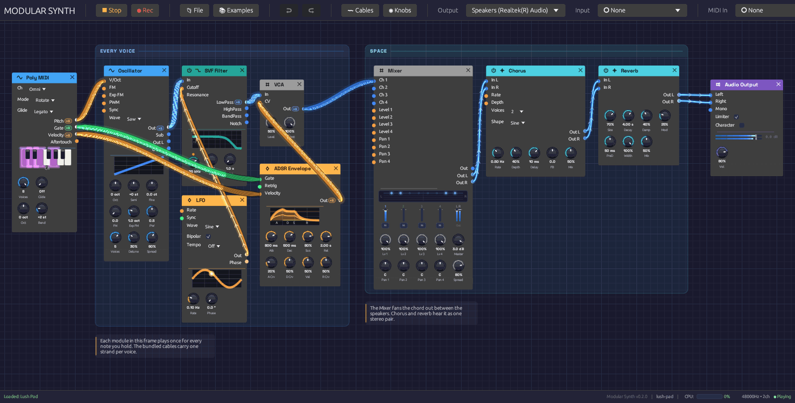
A patch on the canvas. Cables are colored by what they carry, and light up as signal passes through them.A node graph, not a rack
Most software modulars imitate hardware: rows of panels, screws, and cables that sag in front of everything. Modular Synth borrows instead from node editors like Blender's. Every module is a rounded card with inputs on its left edge, outputs on its right, and knobs along the bottom. You can put modules anywhere, zoom out to see the whole patch, and zoom in to work on one corner of it.
What it keeps from hardware is the feedback. Cables glow with the signal they carry, so a note becomes a pulse of light running down the wire and an LFO draws its waveform along the cable. Knobs under modulation turn on their own. Oscillators, envelopes, filters and LFOs draw what they're doing on the module itself. You can see a patch working as well as hear it.
Signals
Each cable carries one of three kinds of signal, and takes its color from it:
| Color | Signal | What it carries |
|---|---|---|
| Blue | Audio | Sound, from −1 to 1 |
| Orange | Control | Modulation (CV): envelopes, LFOs, pitch |
| Green | Gate | On or off: a key held down, a clock tick |
A cable can also carry up to eight voices at once, which is how Modular Synth plays chords. MIDI doesn't travel on cables: the MIDI modules listen to the controller you choose in the toolbar and turn what you play into pitch, gate and velocity. Signal Types and Polyphony cover both in depth.
Modules
There are 23 modules in six categories. A module's header takes its category's color:
| Category | Header | Modules |
|---|---|---|
| Source | Blue | Oscillator, Keyboard, MIDI Note, Poly MIDI |
| Filter | Teal | SVF Filter, Ladder Filter |
| Modulation | Orange | ADSR Envelope, LFO |
| Effect | Cyan | Stereo Delay, Reverb, 3-Band EQ, Distortion, Chorus, Compressor |
| Utility | Gray | Clock, VCA, Attenuverter, Mixer, Sample & Hold, Oscilloscope, Step Sequencer, MIDI Monitor |
| Output | Purple | Audio Output |
The Module Overview introduces each one.
Where to start
If you're new to modular synthesis, read the Getting Started pages in order:
- Installation gets the app running.
- Interface Overview shows you around the window.
- Your First Patch builds a playable synthesizer from an empty canvas, one cable at a time.
If you already know your way around a modular, open the 📚 Examples menu, load a patch, and keep the module reference to hand. The recipes explain how each example works.
Under the hood
Modular Synth is written in Rust, with egui for the interface and cpal for audio. The audio engine runs on its own thread and never waits on the interface: edits travel to it over lock-free queues, every buffer is allocated before playback starts, and a test in the build fails if the audio thread ever allocates memory. That is what keeps the sound from glitching while you patch.
The source is on GitHub.
Installation
Modular Synth runs on Windows, macOS and Linux. You can download a prebuilt release or build it from source with Rust.
Download a release
Prebuilt binaries for Windows, macOS (Intel and Apple Silicon) and Linux are attached to each release on GitHub. Download the zip for your system, unzip it, and run modular_synth.
Releases are cut from time to time and can trail the source. This manual describes the current source, so if a feature here is missing from your copy, build from source.
Build from source
Install Rust
Install the Rust toolchain with rustup:
# Windows
winget install Rustlang.Rustup
# macOS and Linux
curl --proto '=https' --tlsv1.2 -sSf https://sh.rustup.rs | sh
Check that it worked:
cargo --version
Install system libraries (Linux only)
Windows and macOS need nothing more: Modular Synth uses WASAPI and CoreAudio, which come with the system.
On Linux, install the development packages for ALSA (audio), X11 and keyboard handling. On Debian and Ubuntu:
sudo apt install libasound2-dev libxcb-render0-dev libxcb-shape0-dev \
libxcb-xfixes0-dev libxkbcommon-dev libssl-dev
On other distributions, install the equivalent ALSA, xcb and xkbcommon development packages (for example alsa-lib-devel on Fedora, alsa-lib on Arch).
Build and run
git clone https://github.com/chrischaps/Modular.git
cd Modular
cargo run --release
The first build takes a few minutes. Always use --release to play: the debug build is much slower and can't keep up with a busy patch, so you'll hear dropouts. The finished binary is target/release/modular_synth.
The app opens on the First Sound example. Press ▶ Play, then play the Z to M keys on your computer keyboard. If you hear a note, everything is working.
Command line
Pass a patch file to open it instead of First Sound:
cargo run --release -- patches/lush-pad.json
The render tool plays a patch into a WAV file without opening the app or using an audio device, then prints each channel's peak and RMS level:
cargo run --release --bin render -- patches/fm-synthesis.json out.wav --seconds 5
| Option | Default | Effect |
|---|---|---|
--seconds N | 5 | Length of the render |
--sample-rate HZ | 48000 | Sample rate of the file |
--block-size N | 256 | Samples processed per block |
--audition | off | Plays a short phrase into the patch's Keyboard, MIDI Note and Poly MIDI modules |
A patch that waits for a player renders silence unless something inside it plays notes (a Clock or Step Sequencer, say) or you add --audition.
To run the test suite, use cargo test.
Troubleshooting
No sound. Check that ▶ Play is pressed: the app opens stopped. Then check the Output device menu in the toolbar. It lists every output device, with the system default marked (Default); pick the one you're listening on. 🔄 Refresh at the bottom of the menu picks up a device you plugged in after starting.
"Audio unavailable" in the toolbar. Modular Synth couldn't open an output device. Make sure one is connected and that no other application holds it exclusively, then restart.
Crackles and dropouts. Make sure you're running the release build. The toolbar's CPU meter, shown while the patch plays, tells you how close the engine is to its limit. If it's near the top, remove modules or lower the voice count on Poly MIDI and the Oscillator's unison.
My MIDI controller does nothing. Choose it in the toolbar's MIDI In menu: Modular Synth doesn't connect to a controller until you do. A filled dot (●) before the name means it's connected. Connection errors appear in the status bar at the bottom of the window. See MIDI.
Interface Overview
The Modular Synth window has three parts: a toolbar along the top, the canvas where you build patches, and a status bar along the bottom.
The toolbar, the canvas with a patch on it, and the status bar.
The toolbar
From left to right:
| Group | Controls |
|---|---|
| Transport | ▶ Play starts the patch; ⏹ Stop stops it. The app opens stopped. |
| File | 📄 New, 📂 Open, 🕘 Recent, 📚 Examples, 💾 Save, 💾 Save As |
| Edit | ↩ Undo and ↪ Redo. Hover either to see which edit it will undo or redo. |
| 〰 Cables | How signal flow is drawn along cables: Chevrons, Dots or Comets |
| Output | The audio device to play through |
| MIDI In | The MIDI controller to listen to. A filled dot (●) means it's connected. |
At the right end, the toolbar shows a CPU meter while the patch plays, the device's sample rate and channel count, and whether the audio engine is running.
The status bar
The status bar reports what just happened: a file saved, modules pasted, a cable refused and why. When there's nothing to report, it counts the modules and cables in the patch. On the right it names the open patch, with a dot (●) if it has unsaved changes.
If a patch loads with problems (a module this version doesn't know, a cable to a jack that no longer exists), a ⚠ load warning appears on the right. Hover it to read the warnings; click it to dismiss them.
Moving around the canvas
| To | Do this |
|---|---|
| Zoom | Scroll the mouse wheel |
| Pan | Drag with the middle mouse button, or hold Ctrl and drag empty canvas |
| Select a module | Click it |
| Select several | Drag a box across empty canvas |
| Move modules | Drag a module by its body; a selection moves together |
The background grid moves and zooms with the patch, with a brighter line every five squares.
Adding modules
The add menu
Right-click empty canvas to open the add menu. It lists the six categories in their header colors; hover or click one to see its modules, then click a module to place it where you right-clicked. Hover a module's name to read what it does.
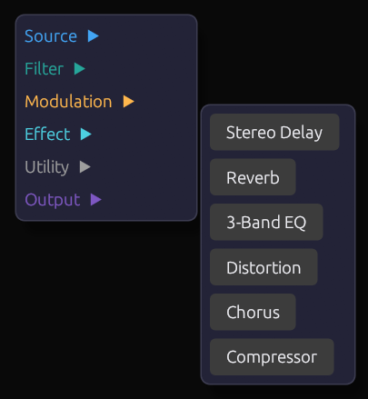
Right-click empty canvas, pick a category, then a module.Quick add
Press Space or Tab with the mouse over the canvas. A search box opens at the cursor, listing every module by category. Type a few letters to narrow the list, then press Enter, and the module appears where the box opened.
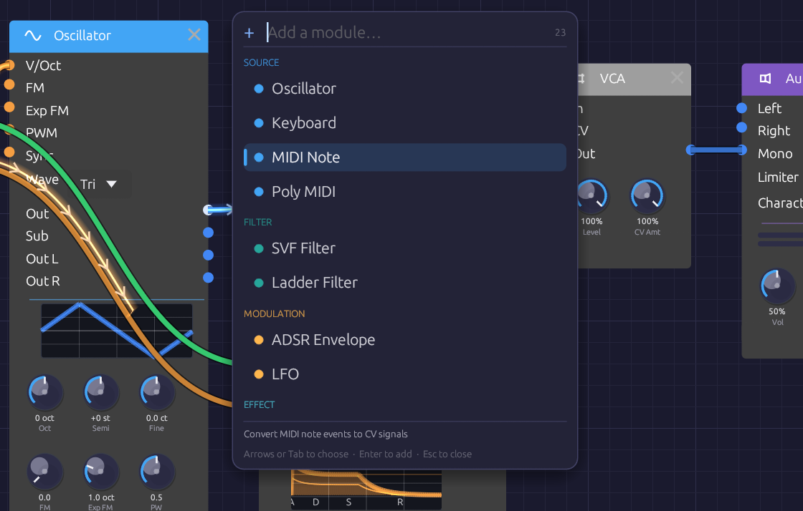
Type a few letters of a module's name or category, then press Enter.The search is forgiving. Letters only need to appear in order, so lfo, svf, dly and s&h all find what you'd expect. Typing a category name (effect, mod) lists that category. Move through the list with the arrow keys or Tab, add the highlighted module with Enter, or close the box with Escape.
Anatomy of a module
Every module has the same layout:
- Header. The module's name and category icon, on a bar in the category's color. Hover the header to read what the module does. The × at the right end deletes the module. Filters and effects also have a power switch at the left end: see Bypass.
- Inputs, down the left edge. Each jack is labeled and colored by the signal it expects.
- Outputs, down the right edge, colored by the signal they send. An output lights up while signal is coming out of it.
- Displays. Many modules draw what they're doing: the oscillator its waveform, the envelope its shape, filters their frequency response, the LFO its wave with a dot riding its phase.
- Knobs, along the bottom, with the current value under each.
Hover any jack's name or knob for a tooltip: what it does, its signal type in the cable's color, and for knobs, its range.
Knobs
| To | Do this |
|---|---|
| Change a value | Drag up or down |
| Make fine adjustments | Hold Shift while dragging |
| Return to the default | Double-click |
| Map to a MIDI controller | Right-click, then Learn MIDI CC |
Some knobs move in whole steps, like the Oscillator's Oct and Semi: they click from one value to the next as you drag.
Knobs with a jack
Many parameters have both a knob and an input jack of the same name. Patch a cable into the jack and the knob sets the center while the incoming signal moves the value around it. Each module page gives the scale.
On most knobs, such as a filter's Cutoff, the knob stays live while the cable is patched, so you can keep moving the center. A few (the LFO's Rate, the Chorus's Rate and Depth) lock instead: the knob dims, stops responding and turns on its own to follow the incoming signal, and the cable modulates around wherever the knob was left.
Either way, a small dot appears above the knob while a cable is patched in, orange once signal arrives. Unplug the cable and the knob is yours again.
Cables
Drag from an output to an input to patch a cable; a jack turns white when the cable is close enough to land on it. You can also drag from an input to an output. Cables only connect where the signals make sense: audio and control mix freely, and a gate can drive a control input, but a cable between jacks that can't work won't attach, and the status bar says why when it can. Signal Types has the full rules.
- One output can feed many inputs. Each gets the full signal.
- Each input takes one cable. Dropping a new cable onto an occupied input replaces the old one.
- No loops. A cable that would feed a module's output back into its own input, directly or through other modules, is refused.
- To remove a cable, drag its end off the input jack and let go over empty canvas.
While the patch plays, cables show what their signal has been doing over the last few seconds. Reading the signal in a cable explains what you're seeing.
Editing modules
The module menu
Right-click a module's header or body (anywhere but a knob) to open its menu. Bypass appears only on filters and effects.
| Item | Shortcut | Effect |
|---|---|---|
| Duplicate | Ctrl + D | Copies the module, slightly below and to the right |
| Copy | Ctrl + C | Copies the module to the clipboard |
| Bypass / Switch on | Ctrl + B | Takes a filter or effect out of the signal path, or puts it back |
| Reset to defaults | Returns every knob to its default | |
| Delete | Delete | Removes the module and its cables |
If the module is part of a selection, the item applies to the whole selection.
Copy, paste and duplicate
Duplicate (Ctrl + D) copies the selected modules a little down and to the right. Cables between them are copied too; cables to the rest of the patch aren't. The copies are selected, so pressing Ctrl + D again makes a row of them.
Copy (Ctrl + C) and Cut (Ctrl + X) put the selected modules on the clipboard. Paste (Ctrl + V) drops them at the mouse cursor, keeping their layout, settings and the cables between them. Pasting again without moving the mouse fans the copies out.
The clipboard holds modules as patch text, so you can paste between two Modular Synth windows, or paste the contents of a whole patch file to add its modules to the current patch. MIDI mappings stay with the original modules.
Bypass
Filters and effects can be bypassed: their audio inputs pass straight to their outputs, as if the module weren't there. Click the power switch at the left of the header, choose Bypass from the module menu, or select modules and press Ctrl + B. A bypassed module's header fades to gray and its controls dim. Switching takes a 20 ms crossfade, so it never clicks, and a bypassed module uses no CPU.
Undo and redo
Undo (Ctrl + Z) and Redo (Ctrl + Shift + Z or Ctrl + Y) cover adding, deleting, moving and bypassing modules, patching and unpatching cables, and turning knobs. Hover the toolbar buttons to see which edit is next, such as Move Oscillator or Set SVF Filter Cutoff.
A whole drag is one step: turning a knob from 200 Hz to 2 kHz and back undoes in one go. A deleted module comes back with its settings, its cables and its MIDI mappings. Knobs moved by a MIDI controller aren't recorded, and opening a patch starts a fresh history.
Playing
Transport
Nothing sounds until you press ▶ Play. ⏹ Stop silences the patch, lets the last of the signal drain out of the cables, and clears echoes and reverb tails, so they don't resume when you play again.
The computer keyboard
The bottom row of letter keys plays like a piano, starting from C4 (middle C):
| Keys | Notes |
|---|---|
Z X C V B N M | C D E F G A B |
, . / | C D E, an octave up |
S D G H J | C♯ D♯ F♯ G♯ A♯ |
L ; | C♯ D♯, an octave up |
The keys play every Keyboard module in the patch; use its Oct knob to shift it up or down. If the patch has a Poly MIDI module, the keys play that too, so you can play chords without a MIDI controller. Keys typed into the quick-add box, or held with Ctrl or Alt, don't play notes.
MIDI
Choose your controller in the toolbar's MIDI In menu; Modular Synth doesn't connect to one until you do. If the controller isn't listed, plug it in and click 🔄 Refresh at the bottom of the menu. None (Disconnect) lets it go. Disconnecting or switching devices releases any notes that were held. If a controller can't be opened, the reason appears in the status bar.
Three modules listen to the controller: MIDI Note for a single voice, Poly MIDI for chords, and MIDI Monitor to see what's arriving.
MIDI Learn
Any knob can follow a MIDI controller's knob or fader:
- Right-click the knob and choose Learn MIDI CC. A purple M badge blinks above it.
- Move the control on your MIDI controller.
The badge stops blinking and stays, and the knob now follows that control across its full range. Right-click it again to Re-learn MIDI CC or Clear MIDI. Mappings are saved with the patch.
Patches
Patches are saved as .json files holding every module, setting, cable and MIDI mapping.
| Action | Shortcut |
|---|---|
| New | Ctrl + N |
| Open | Ctrl + O |
| Save | Ctrl + S |
| Save As | Ctrl + Shift + S |
Examples
The 📚 Examples menu holds six ready-made patches: First Sound, which opens when the app starts, and one for each recipe in this manual. Hover an example to read what it is. Saving an example always asks for a file name, so you save a copy and the original stays intact.
Recent patches
🕘 Recent lists the last eight patches you opened or saved, newest first. Hover one to see where it lives. A file that has since been moved or deleted is grayed out. Clear Recent empties the list.
Unsaved changes
While a patch has unsaved changes, the window title starts with a dot (● Lush Pad · Modular Synth), and so does its name in the status bar. Undoing back to the saved state clears the dot.
New, Open, opening an example or a recent file, and closing the window all ask first when there are unsaved changes:
- Save saves the patch (asking where, if it has never been saved), then carries on. Cancelling the save dialog cancels the whole thing.
- Don't Save (Quit Without Saving, when closing) carries on and lets the changes go.
- Cancel, or
Escape, goes back to the patch.
Autosave and recovery
Every 30 seconds, a patch with unsaved changes is autosaved alongside the app's settings. Saving the patch, or choosing Quit Without Saving, clears the autosave, so one only survives if Modular Synth closes without asking: after a crash or a forced quit.
The next time the app starts, it offers the patch back. Recover reopens it exactly as it was at the last autosave, still marked unsaved; Discard lets it go. At most, you lose the last 30 seconds of work.
Recent files, the autosave, your cable style and the window's size and position are kept in the settings file:
- Windows:
%APPDATA%\Modular Synth\data\app.ron - macOS:
~/Library/Application Support/Modular-Synth/app.ron - Linux:
~/.local/share/modularsynth/app.ron
Keyboard shortcuts
| Shortcut | Action |
|---|---|
Space or Tab | Quick add a module at the cursor |
Delete or Backspace | Delete the selected modules |
Ctrl + D | Duplicate the selected modules |
Ctrl + C / Ctrl + X | Copy / cut the selected modules |
Ctrl + V | Paste at the cursor |
Ctrl + B | Bypass or switch on the selected filters and effects |
Ctrl + Z | Undo |
Ctrl + Shift + Z or Ctrl + Y | Redo |
Ctrl + N | New patch |
Ctrl + O | Open a patch |
Ctrl + S | Save |
Ctrl + Shift + S | Save as |
Escape | Close the add menu or quick-add box |
Shift + drag | Fine knob adjustment |
| Double-click a knob | Reset it to its default |
Your First Patch
In this tutorial you build a playable synthesizer voice from an empty canvas: an oscillator for the tone, a keyboard to play it, an envelope and a VCA to shape each note, and a filter to color it. It takes about fifteen minutes, and each step adds one idea you'll use in every patch after this one.
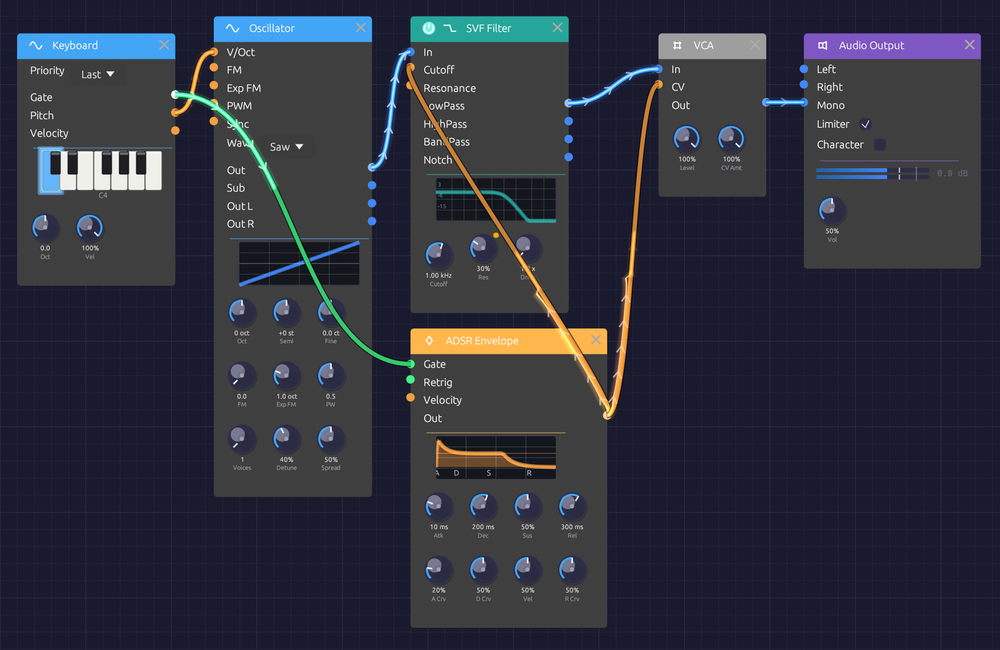
Where you'll end up.Before you start: First Sound
When Modular Synth opens, it loads the First Sound example: a Keyboard, an Oscillator, an ADSR Envelope and a VCA, already patched to the Audio Output. Press ▶ Play in the toolbar and play the Z to M keys on your computer keyboard. That patch is a smaller version of the one you're about to build, so it's worth a minute of listening first.
To start from scratch, click 📄 New (Ctrl + N). The canvas empties; the status bar says Right-click to add nodes. Make sure ▶ Play is still on (the button reads ⏹ Stop while the patch plays).
Step 1: An oscillator you can hear
Every patch needs a sound source and a way out.
- Right-click empty canvas and choose Source › Oscillator.
- Right-click to the right of it and choose Output › Audio Output.
- Drag from the Oscillator's Out jack (right edge, blue) to the Audio Output's Mono jack. Mono sends the signal to both speakers.
You should hear a steady tone. The Oscillator starts on a sine wave at C4 (261.63 Hz), and its display draws the wave.
If you hear nothing, check that the patch is playing, that the toolbar's Output menu names the device you're listening on, and that the Audio Output's Vol knob isn't at zero.
Now change the Oscillator's Wave menu from Sine to Saw. The tone turns bright and buzzy: a sawtooth contains every harmonic, which gives the filter in Step 5 plenty to work with.
Tip: You can also add modules by pressing
Spaceover the canvas and typing a few letters, such asoscorout, thenEnter.
Step 2: Play it from the keyboard
A tone that never changes isn't much of an instrument.
- Add a Source › Keyboard to the left of the Oscillator.
- Patch the Keyboard's Pitch output into the Oscillator's V/Oct input.
Play the bottom row of your computer keyboard: Z is C, X is D, and so on up to M for B, with the sharps on S, D, G, H and J. The Keyboard's piano lights up the notes you hold, and the Oscillator follows.
Pitch is an orange control cable carrying volts per octave: each step of 1.0 is one octave, so the Oscillator stays in tune at every note. But the tone still never stops. For that, you need to shape each note.
Step 3: A VCA to control the level
A VCA (voltage-controlled amplifier) sets the level of whatever passes through it, under the control of another signal.
- Add a Utility › VCA between the Oscillator and the Audio Output.
- Patch the Oscillator's Out into the VCA's In.
- Patch the VCA's Out into the Audio Output's Mono. This replaces the cable that was there, because each input takes one cable.
Nothing changes yet: with nothing patched into its CV input, the VCA lets the sound through at full level. The next step gives it something to listen to.
Step 4: An envelope to shape each note
An envelope draws a shape every time a note is played: it rises when the key goes down and falls when the key comes up.
- Add a Modulation › ADSR Envelope below the VCA.
- Patch the Keyboard's Gate output into the envelope's Gate input. Gate is green: it's on while a key is held and off when it's released.
- Patch the envelope's Out into the VCA's CV input.
Now each key plays a note that starts and stops. The envelope runs through four stages, each with a knob:
- Atk (attack): how long the note takes to reach full level. The default is 10 ms.
- Dec (decay): how long it then takes to fall to the sustain level.
- Sus (sustain): the level held for as long as the key is down.
- Rel (release): how long the note takes to fade after you let go.
Try a pluck: turn Sus all the way down and Dec to about 300 ms, so each note dies away even while you hold the key. Then try a swell: Atk around 1 s, Sus up, Rel around 2 s. The display on the envelope draws each shape as you turn the knobs.
Step 5: A filter to color the tone
A filter removes part of a sound's spectrum. A lowpass filter lets the low frequencies through and cuts the high ones, darkening the tone. This is the heart of subtractive synthesis: start with a bright waveform, then carve it.
- Add a Filter › SVF Filter between the Oscillator and the VCA.
- Patch the filter's LowPass output into the VCA's In, replacing the cable from the Oscillator.
- Patch the Oscillator's Out into the filter's In.
Play a few notes and turn the filter's knobs:
- Cutoff sets where the filter starts cutting. Turn it down and the saw goes dark and muffled; turn it up and the brightness returns. The display draws the filter's response as you turn it.
- Res (resonance) adds a peak at the cutoff, giving the sound a vocal, nasal edge. The default is 0.5. Near the top of its range the filter starts to ring on its own.
Step 6: Let the envelope open the filter
Real instruments are brightest at the start of a note. You can do the same by letting the envelope move the filter's cutoff.
- Patch the envelope's Out into the filter's Cutoff input. One output can feed any number of inputs, so the envelope keeps driving the VCA too.
- Turn the Cutoff knob down to about 400 Hz.
Each note now opens the filter and closes it again as the envelope decays. The Cutoff knob stays live and sets where the sweep starts; the envelope adds up to one octave on top. A small dot above the knob shows that a cable is moving it.
For a plucky, percussive bass, set Atk to its minimum, Dec to about 200 ms and Sus low. For a slow, brightening pad, lengthen Atk.
The finished patch
[Keyboard Pitch] ──> [Oscillator V/Oct]
[Keyboard Gate] ──> [ADSR Envelope Gate]
[Oscillator Out] ──> [SVF Filter In]
[SVF Filter LowPass] ──> [VCA In]
[ADSR Envelope Out] ──> [VCA CV]
[ADSR Envelope Out] ──> [SVF Filter Cutoff]
[VCA Out] ──> [Audio Output Mono]
Save it with 💾 Save (Ctrl + S).
The signal path runs left to right: the oscillator makes the tone, the filter colors it, and the VCA shapes its level. The keyboard and envelope sit off to the side, controlling the others. Nearly every subtractive synthesizer, hardware or software, is built this way.
What you've learned
- Modules are added from the right-click menu or with
Space, and connected by dragging from an output to an input. - Audio (blue) is the sound itself; control (orange) moves things, like pitch and cutoff; gates (green) say when a note is on.
- An envelope through a VCA turns a constant tone into notes.
- One output can drive several inputs, and a cable into a knob's jack moves that knob.
Things to try
- Use separate envelopes. Add a second ADSR Envelope for the filter, also gated by the Keyboard, so brightness and loudness can have different shapes.
- Add velocity. Patch the Keyboard's Velocity into the envelope's Velocity input, then lower the Keyboard's Vel knob for quieter notes.
- Add movement. Patch a Modulation › LFO into the filter's Cutoff for a slow sweep. Its Out swings the cutoff an octave either way.
- Add space. Put an Effect › Reverb between the VCA and the Audio Output: VCA Out into Reverb In L, then the Reverb's Out L and Out R into the output's Left and Right.
- Watch it. Patch the VCA's Out into a Utility › Oscilloscope as well as the output to see the envelope shape the wave.
Next
- Signal Types explains what each cable color carries and what can connect to what.
- Basic Subtractive Synth takes this patch further, with separate envelopes for brightness and volume. It's in 📚 Examples too.
- The module reference has a page for every module.
Signal Types
Every jack in Modular Synth has a signal type, and every type has a color. The color of a jack tells you what it sends or expects, and a cable takes the color of the output it comes from, so you can read a patch's signal flow at a glance.
| Type | Color | Range | Carries |
|---|---|---|---|
| Audio | Blue | −1.0 to 1.0 | Sound |
| Control | Orange | 0.0 to 1.0, or −1.0 to 1.0 | Modulation and pitch (CV) |
| Gate | Green | 0.0 or 1.0 | Notes, clock pulses, triggers |
| MIDI | Purple | Note and controller events | Reserved; see MIDI |
Underneath, audio, control and gate signals are all the same thing: a stream of numbers at the audio sample rate. The type describes what the numbers mean, and it decides which jacks a cable may connect (see Which types connect).
Audio
Audio is the sound itself: a waveform swinging between −1.0 and 1.0, at your audio device's sample rate (typically 44.1 or 48 kHz). Oscillators make it; filters, the VCA, the Mixer and the effects shape it; the Audio Output sends it to your speakers.
Keep audio within ±1.0 and it passes through the output untouched. Louder than that and the output stage's limiter, on by default, catches the peaks before they clip. It's a safety net, though, not a mixing tool. When several voices or oscillators add up, bring the level down with a VCA or the Mixer.
Control
Control signals, often called CV (control voltage), move a parameter instead of making a sound. They come from envelopes, LFOs, the sequencer, the keyboard and MIDI modules, and they go into jacks such as a filter's Cutoff or an oscillator's FM.
A control signal is either:
- Unipolar, from 0.0 to 1.0. An envelope is unipolar: it rises from nothing to its peak and falls back.
- Bipolar, from −1.0 to 1.0. An LFO in bipolar mode swings both ways around the center, which suits vibrato or a sweep around a set cutoff.
Most control signals change slowly, but nothing stops them running at audio rate. Patch an oscillator into another oscillator's FM input and you have FM synthesis.
Pitch: 1 per octave
Pitch travels as a control signal on a 1-per-octave scale, the digital version of the 1 V/octave standard in hardware modular. Each 1.0 is an octave:
| Pitch CV | Note (with the oscillator's tune knobs at 0) |
|---|---|
| −1.0 | C3 |
| 0.0 | C4 (261.63 Hz) |
| 0.5 | F♯4 |
| 1.0 | C5 |
| 2.0 | C6 |
One semitone is 1/12. The Pitch outputs of Keyboard, MIDI Note, Poly MIDI and the Step Sequencer all use this scale, so they play an Oscillator in tune with nothing to calibrate. Both filters take their Cutoff CV on the same scale, so a pitch cable patched into Cutoff makes the filter track the keyboard exactly.
Gate
A gate is either on (1.0) or off (0.0). It says when: a key held down, a step in a sequence, a tick of the clock. The ADSR Envelope, for example, starts its attack the moment its Gate goes on (the rising edge) and starts its release the moment it goes off (the falling edge).
A short gate is often called a trigger. Modules that only care about the moment a gate begins, such as the clock input of the Step Sequencer or the Trig input of Sample & Hold, treat both the same way.
Gates come from the Gate outputs of Keyboard, MIDI Note, Poly MIDI, the Clock and the Step Sequencer (which also has an EOC, end-of-cycle, gate).
MIDI
MIDI is the purple signal type, and today no jack uses it. MIDI from your controller doesn't arrive over a cable. It goes straight into the modules that listen for it: MIDI Note, Poly MIDI and the MIDI Monitor. Those modules turn notes into ordinary Pitch, Gate and Velocity signals that the rest of the patch understands. The Keyboard module does the same for your computer keyboard.
Which types connect
Same-type connections always work. A few cross-type connections work too, and the rest are refused:
| From | To | Allowed? | Why |
|---|---|---|---|
| Audio | Control | Yes | Audio-rate modulation, such as FM |
| Control | Audio | Yes | Mix or process a CV like audio, such as an LFO into the Mixer |
| Gate | Control | Yes | Use a gate as a 0-or-1 modulation signal |
| Gate | Audio | No | A gate needs an envelope or VCA to become sound |
| Audio or Control | Gate | No | Gate inputs only take gates |
| MIDI | Anything else | No | MIDI needs a converter module |
Allowed cross-type connections pass the signal through unchanged. An audio cable into a control input is the raw waveform; a gate into a control input is exactly 0.0 or 1.0.
If you drop a cable on a jack that can't take it, Modular Synth removes the cable and the status bar at the bottom of the window explains why, for example Control cannot connect to Gate.
Signal color and category color
Don't confuse the two palettes. Jacks and cables are colored by signal type, as above. The bar across the top of each module is colored by the module's category: blue for Sources, teal for Filters, and so on. See the Module Overview.
See also
- Connections: patching, and reading the signal in a cable
- Polyphony: cables that carry up to eight voices
Connections
A cable carries a signal from one module's output to another module's input. Patching is the whole of Modular Synth: the modules decide what can happen, and the cables decide what does.
Patching a cable
Outputs are on the right edge of a module and inputs are on the left. To connect two modules:
- Press on an output jack and drag. A cable follows the pointer.
- Release over an input jack on another module.
You can also start from an empty input and drag back to an output.
To unplug a cable, press on the input end and drag it away. The cable comes off the jack and follows the pointer: drop it on another input to re-patch it, or on empty canvas to remove it. Deleting a module removes all of its cables.
Patching and unpatching are recorded in the undo history, so Ctrl + Z puts back a cable you pulled by mistake.
The rules
- An output can feed any number of inputs. Each one receives the full signal, with no loss of level.
- An input takes one cable. Patching a second cable into an occupied input replaces the first.
- Signal types must be compatible. Audio and control connect to each other freely, and a gate can drive a control input, but a gate input only accepts gates. The full table is on Signal Types. If a cable can't connect, Modular Synth removes it and the status bar explains why.
- A module can't patch into itself, and signals don't loop. Modular Synth processes the patch in one direction, from sources to the output, so a cable that would feed a module's output back into its own input, directly or through other modules, has no effect. For echoes and feedback, use the Delay's Feedback knob.
Empty jacks
An input with nothing patched in isn't necessarily zero. Each jack has a resting value chosen so the module does something sensible on its own. A VCA with nothing in its CV jack plays at full level, for example, so you can hear its input before you add an envelope.
The stereo effects work the same way. Patch only their left input and they treat the signal as mono, feeding both sides, so a mono voice into the Reverb still gets a stereo tail.
Knobs with jacks
Many parameters have both a knob and an input jack of the same name, such as Cutoff on the filters or Time on the Delay. With nothing patched, the knob sets the value. Patch a cable in and the signal modulates the parameter around the knob: the knob sets the center, and the cable moves the value up and down from there.
How far a cable moves the parameter depends on the parameter, and each module page gives the scale. On both filters, for instance, the Cutoff CV is 1 per octave: +1.0 doubles the cutoff and −1.0 halves it. With Cutoff at 1 kHz, a bipolar LFO sweeps the filter from 500 Hz to 2 kHz.
A small dot above the knob shows that a cable is patched in: orange once the signal is arriving, green while it's connected but hasn't reported a value yet. On most knobs you can keep turning the knob to move the center while the cable plays. A few knobs (Rate on the LFO, Rate and Depth on the Chorus) dim while patched and turn by themselves to follow the incoming signal; unplug the cable to adjust them again.
A knob mapped to a MIDI controller shows a purple M badge instead of the dot.
Reading the signal in a cable
While the patch plays, each cable shows what its signal has been doing over the last few seconds. The signal travels from the output to the input at a steady pace, so the end of the cable nearest the output is now and points further along are moments ago.
- Brightness is strength. A cable lights up with its signal and goes dark when it's silent. A note becomes a packet of light that runs down the wire. The packet's length is how long the note lasted, and an audio cable's light fades out as the note releases.
- Marks point the way. Chevrons ride the light from output to input, so you can read a patch's direction even in a still frame. Each mark keeps the brightness of the moment it left the output.
- Control cables draw their shape. On orange cables the light swings to one side of the cable or the other with the signal's value. An LFO shows its waveform traveling down the wire, an envelope its rise and fall, a sequencer its steps.
- Gates are on or off. A green cable shows bright packets with hard edges, one per gate.
When you press Stop, the last of the signal drains out of the cables rather than vanishing.
To change the marks, open Cables in the toolbar and choose Chevrons, Dots or Comets. Modular Synth remembers your choice.
Polyphonic cables are drawn as a bundle of strands, one per voice. See Seeing polyphony.
Laying out a patch
A patch is easier to read, and easier to come back to, when it follows a few habits:
- Run the audio path from left to right, ending at the Audio Output.
- Put modulation sources (envelopes, LFOs, the clock) above or below the audio path, so their cables reach across it rather than tangling with it.
- Keep each voice's modules together.
[LFO] ──┐
▼ Cutoff
[Oscillator] ──> [SVF Filter] ──> [VCA] ──> [Audio Output]
▲ CV
[ADSR] ──────────────┘
When there's no sound
Work backward from the output:
- Is anything patched into the Audio Output? The Mono input is the simplest place to start.
- Is the transport running? Press Play in the toolbar.
- Is the VCA opening? If its CV jack is patched to an envelope, the envelope needs a gate. Play a note.
- Is the envelope getting a gate? Its Gate cable should light green when you play.
- Follow the light. A cable that stays dark carries silence. The last lit cable before the dark ones points to the module to check.
See also
- Signal Types: what each color carries, and which types connect
- Polyphony: one cable, up to eight voices
- Interface Overview: every editing action and shortcut
Polyphony
A cable in Modular Synth can carry up to eight channels at once, one per voice. Patch a chord through a single chain of modules and every note gets its own oscillator, its own filter and its own envelope. The result is a chord of separate voices, each shaping itself, rather than one voice playing a blend of notes.
This is the approach VCV Rack takes. You don't build eight copies of your voice. You build one, and the cables carry the voices through it.
Where voices come from
The Poly MIDI module is where polyphony starts. Its Voices knob (1 to 8) sets how many channels its Pitch, Gate, Velocity and Aftertouch cables carry, and each note you play is given a channel of its own. When a Poly MIDI module is in the patch, your computer keyboard plays it too.
Polyphonic modules
These modules run one voice per channel of their widest input:
| Module | Each voice has its own |
|---|---|
| Oscillator | Phase, sync and unison stack |
| SVF Filter | Filter state and resonance |
| Ladder Filter | Filter state and resonance |
| ADSR Envelope | Stage and level |
| VCA | Gain |
| Attenuverter | Scaling |
| Sample & Hold | Held value |
Their outputs carry as many channels as their widest input. The knobs are shared: turning Cutoff moves every voice's cutoff.
Seeing polyphony
A polyphonic cable is drawn as a bundle of strands, one per channel, in a dark sheath that narrows where it plugs into a jack. The bundle widens as the channel count grows, so you can tell mono from poly at a glance at any zoom.
Each strand lights with its own voice. Hold a chord and light runs along the strands of the notes you're playing while the rest stay dark. When you let go, each note's release fades down its own strand. The glow around the bundle grows with the number of voices playing, so a chord glows brighter than a single note. See Reading the signal in a cable.
Output labels show the channel count too: Out ×8 means that output carries eight channels. The count comes from the running patch, so press Play to see it. Once shown, it stays while the transport is stopped.
Mixing mono and poly
A mono cable into a polyphonic module is shared by every voice. One LFO into a polyphonic filter's Cutoff sweeps all the voices together. To move each voice on its own, use a polyphonic source such as the envelope or Poly MIDI's Velocity.
A polyphonic cable into a mono module is folded down to one channel:
- Audio inputs hear every channel summed. That's why a polyphonic voice can go straight into the Mixer, an effect or the Audio Output.
- Control and gate inputs take the first channel only, since adding CVs together rarely means anything useful.
Voices add up, so a four-note chord is roughly four times as loud as one note. Leave headroom with the VCA's Level or the Mixer.
A polyphonic voice
[Poly MIDI Pitch] ──> [Oscillator V/Oct]
[Poly MIDI Gate] ──> [ADSR Gate]
[Poly MIDI Velocity] ──> [ADSR Velocity]
[Oscillator Out] ──> [SVF Filter In]
[ADSR Out] ──> [SVF Filter Cutoff]
[SVF Filter LowPass] ──> [VCA In]
[ADSR Out] ──> [VCA CV]
[VCA Out] ──> [Reverb In L]
[Reverb Out L / R] ──> [Audio Output Left / Right]
Every module up to the VCA runs one copy per voice. The Reverb hears the voices summed, as a single stereo instrument.
Cost
Each voice is a full copy of the module, so eight voices use about eight times the CPU of one. If a patch strains your computer, turn down Voices on the Poly MIDI module. With mono cables, a polyphonic module runs a single voice and costs no more than before.
Module Overview
Modular Synth has 23 modules in six categories. Each category has its own header color, so you can tell what a module is for at a glance across a crowded patch. The categories match the right-click menu and the quick-add palette, and the modules are listed here in the order the menu shows them.
The ID is the name a patch file uses to refer to the module.
Categories
Source
Blue header. Modules that start a sound or a note: the oscillator, and the modules that turn your playing into pitch and gate signals.
| Module | ID | What it does |
|---|---|---|
| Oscillator | osc.sine | Band-limited VCO with a tune section, hard sync, through-zero FM, a sub-oscillator and unison |
| Keyboard | input.keyboard | Play notes from your computer keyboard |
| MIDI Note | input.midi_note | One voice of pitch, gate, velocity and aftertouch from a MIDI controller |
| Poly MIDI | input.poly_midi | Up to eight voices from a MIDI controller, for chords |
Filter
Teal header. Modules that shape a sound's tone by removing or emphasizing frequencies. Both can be bypassed.
| Module | ID | What it does |
|---|---|---|
| SVF Filter | filter.svf | 12 dB/octave multimode filter with lowpass, highpass, bandpass and notch outputs |
| Ladder Filter | filter.ladder | Moog-style 24 dB/octave lowpass, saturating and oversampled |
Modulation
Orange header. Sources of movement: control signals that change other modules' parameters over time.
| Module | ID | What it does |
|---|---|---|
| ADSR Envelope | mod.adsr | Attack, decay, sustain and release, with exact stage times, curve shaping and velocity |
| LFO | mod.lfo | Low-frequency oscillator for cyclic modulation |
Effect
Cyan header. Processors for finished sound. Every effect can be bypassed.
| Module | ID | What it does |
|---|---|---|
| Stereo Delay | fx.delay | Echoes with feedback filtering, ping-pong, tempo sync and tape mode |
| Reverb | fx.reverb | Stereo feedback-delay-network reverb with a modulated tail |
| 3-Band EQ | fx.eq | Low shelf, parametric mid and high shelf |
| Distortion | fx.distortion | Oversampled soft clip, hard clip, wavefolder, tube and bit crush |
| Chorus | fx.chorus | Stereo chorus and flanger |
| Compressor | fx.compressor | Dynamics compressor with sidechain and a gain-reduction output |
Utility
Gray header. The plumbing of a patch: levels, timing, sequencing, and tools for seeing what a signal is doing.
| Module | ID | What it does |
|---|---|---|
| Clock | util.clock | Steady gate pulses at a tempo |
| VCA | util.vca | Voltage-controlled amplifier: sets a signal's level from a CV |
| Attenuverter | util.attenuverter | Scale, invert and offset a control signal |
| Mixer | util.mixer | Two-channel summing mixer |
| Sample & Hold | util.sample_hold | Capture a signal's value on each trigger and hold it |
| Oscilloscope | util.oscilloscope | Draw up to two signals as waveforms |
| Step Sequencer | seq.step | 16 steps of pitch, gate and velocity |
| MIDI Monitor | util.midi_monitor | Show incoming MIDI messages |
Output
Purple header. Where the patch meets your speakers.
| Module | ID | What it does |
|---|---|---|
| Audio Output | output.audio | Stereo master output with volume, DC blocking and a peak limiter |
Header colors describe what a module is. The colors of its jacks and cables describe the signals it handles, which is a separate palette: see Signal Types.
Polyphonic modules
The Oscillator, both filters, the ADSR Envelope, the VCA, the Attenuverter and Sample & Hold run one voice per channel when a polyphonic cable reaches them. Everything else treats a polyphonic cable as one signal. See Polyphony.
Common signal chains
The classic subtractive voice: an oscillator, a filter to shape its tone, and a VCA opened by an envelope.
[Keyboard Pitch] ──> [Oscillator V/Oct]
[Oscillator Out] ──> [SVF Filter In]
[SVF Filter LowPass] ──> [VCA In]
[VCA Out] ──> [Audio Output Mono]
[Keyboard Gate] ──> [ADSR Gate]
[ADSR Out] ──> [VCA CV]
Add space with effects after the VCA, so they process the shaped note:
[VCA Out] ──> [Stereo Delay In L]
[Stereo Delay Out L / R] ──> [Reverb In L / R]
[Reverb Out L / R] ──> [Audio Output Left / Right]
Drive a voice from a sequence instead of a keyboard:
[Clock Gate] ──> [Step Sequencer Clock]
[Step Sequencer Pitch] ──> [Oscillator V/Oct]
[Step Sequencer Gate] ──> [ADSR Gate]
Choosing a module
| To… | Reach for |
|---|---|
| Make a tone | Oscillator |
| Play notes | Keyboard, MIDI Note, or Poly MIDI for chords |
| Darken or brighten a sound | SVF Filter or Ladder Filter |
| Give each note a shape in time | ADSR Envelope into a VCA |
| Add slow, repeating movement | LFO |
| Tame or flip a modulation signal | Attenuverter |
| Play a pattern | Clock into the Step Sequencer |
| Make stepped random changes | Sample & Hold |
| Combine two signals | Mixer |
| Add space and depth | Stereo Delay, Reverb, Chorus |
| Add grit or warmth | Distortion |
| Balance tone and dynamics | 3-Band EQ, Compressor |
| See a signal | Oscilloscope, MIDI Monitor |
| Hear the result | Audio Output |
Oscillator
Module ID osc.sine · Category Source
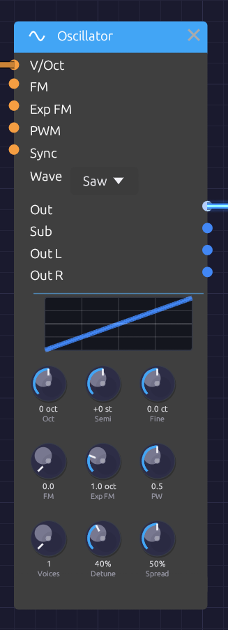
The tune, timbre and ensemble rows, under a preview of the selected waveform.The Oscillator is the main sound source in Modular Synth. It is a VCO (voltage-controlled oscillator): a tuned waveform whose pitch follows a keyboard, an LFO or another oscillator.
Beyond the four classic waveforms, it has the features that make an oscillator an instrument:
- a tune section in octaves, semitones and cents;
- hard sync to another oscillator;
- through-zero linear FM and exponential FM;
- a sub-oscillator one octave down;
- unison of up to seven voices, with stereo spread. Seven detuned saws is the classic supersaw.
Every waveform is band-limited. Each voice runs at twice the sample rate with polyBLEP corrections on its edges and polyBLAMP corrections on its corners, then a halfband filter brings it back down. A 5 kHz saw's aliasing sits around -80 dB, so high notes and sync sweeps stay clean.
Inputs
| Port | Signal Type | Description |
|---|---|---|
| V/Oct | Control (Orange) | Pitch, 1 per octave. Each +1.0 raises the pitch one octave, on top of the tune section |
| FM | Control (Orange) | Through-zero linear FM, scaled by the FM knob |
| Exp FM | Control (Orange) | Exponential FM, Exp FM knob octaves per unit |
| PWM | Control (Orange) | Pulse-width modulation around the PW knob (±1 moves it ±0.4) |
| Sync | Control (Orange) | Hard sync. Each rising zero crossing restarts the cycle. Accepts audio, control or gates |
Outputs
| Port | Signal Type | Description |
|---|---|---|
| Out | Audio (Blue) | All unison voices, mixed to mono |
| Sub | Audio (Blue) | Square wave one octave below the tuned pitch |
| Out L | Audio (Blue) | Unison voices spread to the left |
| Out R | Audio (Blue) | Unison voices spread to the right |
Parameters
The knobs sit in three rows: tune, timbre and ensemble.
| Control | Range | Default | Description |
|---|---|---|---|
| Oct | -4 to +4 | 0 | Octaves above or below C4. Clicks in whole octaves |
| Semi | -12 to +12 | 0 | Semitones. Clicks in whole semitones |
| Fine | ±100 cents | 0 | Fine tuning |
| FM | 0 – 5 | 0 | Linear FM index (see below) |
| Exp FM | 0 – 4 oct | 1 | Octaves of pitch change per unit at the Exp FM input |
| PW | 0.1 – 0.9 | 0.5 | Pulse width of the square (0.5 is a 50% duty cycle) |
| Voices | 1 – 7 | 1 | Unison voices |
| Detune | 0 – 100% | 40% | How far apart the unison voices are tuned |
| Spread | 0 – 100% | 50% | How wide the unison voices sit across Out L and Out R |
| Wave | Sine / Saw / Square / Tri | Sine | Dropdown on the node |
With every tune knob at 0, the oscillator plays C4 (261.63 Hz). The keyboard and MIDI modules send 0.0 for C4, so they play in tune with nothing else to set. MIDI note 69 plays 440 Hz to within a tenth of a cent.
Pitch is smoothed in octaves, not Hz, so a jump of an octave up takes as long as an octave down.
Waveforms
The preview at the top of the node draws one cycle of the selected waveform, and follows the PW knob on the square.
- Sine is a pure tone with no harmonics: sub-bass, FM carriers and modulators, flute-like tones.
- Saw has every harmonic, falling as 1/n: classic leads and basses, strings, brass. It is the richest source for filtering, and the one to use for a supersaw.
- Square has odd harmonics only, for hollow, woody, clarinet-like tones. Pulse width reshapes it, from the square at 0.5 to thin and nasal near 0.1 or 0.9.
- Tri (triangle) has odd harmonics that fall away fast: softer than the square, brighter than the sine.
Tune section
Oct and Semi set the note; Fine trims it in cents. To tune a second oscillator a fifth up, set Semi to +7. To make it beat slowly against the first, add a few cents of Fine.
Hard sync
Patch another oscillator's Out into Sync:
[Osc 2 Out] ──> [Osc 1 Sync]
Every time Osc 2's waveform rises through zero, Osc 1 starts its cycle again. The result repeats at Osc 2's pitch, but its tone comes from Osc 1's pitch. Tune Osc 1 above Osc 2 and sweep its pitch (a slow LFO or envelope on V/Oct or Exp FM) for the classic tearing sync sweep.
The reset itself is band-limited, so sync sweeps don't fizz with aliasing.
Through-zero FM
The FM input multiplies the pitch by 1 + FM × input, where FM is the knob:
- At an FM of 1, an input of -1 just reaches 0 Hz.
- Past 1, the frequency swings through zero and the waveform runs backward for a moment, instead of stalling at 0 Hz.
That keeps the average pitch where it was, so deep FM stays in tune and keeps the bright, glassy character of DX-style FM. Because the depth is relative to the pitch, the timbre stays the same as you play up the keyboard.
[Osc 2 Out] ──> [Osc 1 FM]
[Osc 1 Out] ──> [VCA In] ──> [Audio Output]
- Sine into sine gives the cleanest FM tones.
- Whole-number pitch ratios (Semi +12, or +19 for 3:1) sound harmonic.
- Other ratios sound bell-like and metallic.
- Shape the modulator's level with an envelope (through a VCA) to make the brightness decay like a struck bell.
The FM Synthesis recipe builds a complete patch around this.
Exponential FM
Exp FM works like a second V/Oct input with its own depth knob. An LFO into it gives a vibrato that's even in pitch: the same width in cents on every note. Keep the depth small (Shift-drag the knob for fine steps): 0.02 octaves is about ±24 cents. At audio rates it gives a rougher, less pitch-stable kind of FM than the linear input.
Sub-oscillator
Sub is a square wave one octave below the tuned pitch. It divides the main oscillator's own cycle, so it follows V/Oct, FM and sync. Mix it in under a saw for weight:
[Oscillator Out] ──> [Mixer Ch 1]
[Oscillator Sub] ──> [Mixer Ch 2]
[Mixer Out] ──> [Ladder Filter In]
Unison and supersaw
Voices stacks copies of the oscillator, each slightly detuned:
- Detune sets how far apart they are. Its curve is gentle at the bottom: 20% puts the outer voices about ±4 cents apart, 40% about ±16 cents, and 100% a full ±100 cents.
- The voices bunch toward the middle, close to Roland's JP-8000 supersaw. The spacing is deliberately uneven, so the voices never beat in lockstep.
- Each voice starts at a different point in its cycle, so the stack doesn't open with one loud spike.
- Out sums all the voices at about the loudness of one voice.
- Out L and Out R pan the voices across the stereo field, outer voices widest. Spread sets the width.
For a supersaw: Wave on Saw, Voices at 7, Detune about 40%, and Out L and Out R into the output's Left and Right.
Pulse-width modulation
With the square wave selected, modulate the pulse width with an LFO:
[LFO Out] ──> [Oscillator PWM]
Slow rates give a chorus-like shimmer; fast rates, a more dramatic wobble in the tone.
Patch examples
Sync lead
[Keyboard Pitch] ──> [Osc 2 V/Oct]
──> [Osc 1 V/Oct] (Osc 1 Oct +1)
[Osc 2 Out] ──> [Osc 1 Sync]
[ADSR Out] ──> [Osc 1 Exp FM]
[Osc 1 Out] ──> [SVF Filter In]
Each note sweeps Osc 1's pitch up with the envelope, while sync holds it to Osc 2's pitch.
Supersaw pad
[Keyboard Pitch] ──> [Oscillator V/Oct] (Saw, 7 voices)
[Oscillator Out L] ──> [Reverb In L]
[Oscillator Out R] ──> [Reverb In R]
[Reverb Out L] ──> [Audio Output Left]
[Reverb Out R] ──> [Audio Output Right]
Polyphony
The Oscillator is polyphonic. Patch a polyphonic Pitch cable from Poly MIDI into V/Oct and each note gets its own oscillator, with its own phase, sync and unison stack. The knobs are shared by every voice. Unison multiplies the cost: eight notes of a seven-voice supersaw is 56 oscillators. See Polyphony.
Notes
- Older patches load at the same pitch. Their Frequency setting is split into Oct, Semi and Fine. FM Depth, which used to be in Hz, becomes the matching index at that pitch. A MIDI controller mapped to Frequency moves to Oct over the same range. The old Frequency input jack is gone; a cable into it is skipped with a load warning.
- Band-limited edges overshoot a little. Saw and square peak at about 1.3 for a few samples after each edge. This is ringing near 24 kHz, which is inaudible, and any filter or the output stage takes it away.
- The tune section reaches from about 7.7 Hz to 8.9 kHz. Use V/Oct or Exp FM to go further.
Related modules
- LFO for vibrato and PWM
- SVF Filter to shape the oscillator's harmonics
- Ladder Filter, the fat, saturating 24 dB alternative
- VCA and ADSR Envelope to turn a tone into notes
Keyboard
Module ID input.keyboard · Category Source
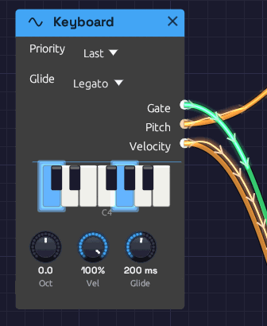
The piano display lights the keys you're holding.The Keyboard turns your computer keyboard into a monophonic controller. Press a key and it sends the note's pitch as V/Oct, raises a gate for as long as you hold it, and sends a fixed velocity. It needs no setup and no hardware, which makes it the quickest way to hear a patch. The First Sound example that opens with the app is played from it.
It plays one note at a time. To play chords from the same keys, use Poly MIDI instead: while a Poly MIDI module is in the patch, the computer keyboard plays it too.
Outputs
| Port | Signal Type | Description |
|---|---|---|
| Gate | Gate (Green) | High while a key is held. Patch it into an envelope's Gate |
| Pitch | Control (Orange) | The held note as V/Oct. C4 is 0.0, C5 is +1.0, C3 is −1.0 |
| Velocity | Control (Orange) | The Vel knob's value, sent with every note |
The Gate output lights up on the node while a note is held.
Parameters
| Control | Range | Default | Description |
|---|---|---|---|
| Oct (Octave) | −2 to +2 | 0 | Shifts the whole keyboard up or down by octaves |
| Vel (Velocity) | 0 – 100% | 100% | The strength sent for every note. A computer key can't tell soft from hard, so this sets it for all of them |
| Priority | Last / Lowest / Highest | Last | Reserved for a future update. It has no effect yet (see Playing) |
Key layout
The bottom two letter rows form a piano keyboard starting at C4. The bottom row plays the white keys and the row above it plays the black keys, sitting between them as they would on a piano:
Black keys: S D G H J L ;
White keys: Z X C V B N M , . /
Note: C D E F G A B C D E
That's C4 to E5, a little over an octave. The top letter row plays too, in the same octave: Q is C4, R is E4 and I is B4, and W E T Y U O P are the black keys from C♯4 to D♯5. Turn Oct to move the whole range.
Playing
Play one key at a time. While any key is held, the Keyboard stays on the note you pressed first: pressing other keys lights them on the piano display but doesn't change the pitch or retrigger the gate. Release every key and the next one you press sounds. For legato lines, note priority and retriggering, use a MIDI controller with MIDI Note.
After you let go, Pitch stays on the last note, so the release tail stays in tune. Even a very quick tap holds the gate high for at least 30 ms, so every key press triggers a full envelope.
Keys don't play notes while you hold Ctrl or Alt (those are shortcuts), while you're typing in a text field, or while the quick-add palette is open. Space and Tab open the palette, so they're never notes. The app has to have keyboard focus: if nothing happens, click the canvas.
Like everything else, the Keyboard only sounds while the patch is playing. Press Play in the toolbar first.
Patch examples
The smallest playable voice, as in the First Sound example:
[Keyboard Pitch] ──> [Oscillator V/Oct]
[Keyboard Gate] ──> [ADSR Gate]
[Oscillator Out] ──> [VCA In]
[ADSR Out] ──> [VCA CV]
[VCA Out] ──> [Audio Output Mono]
Two oscillators following one keyboard, the second a fifth up (Semi +7):
[Keyboard Pitch] ──> [Oscillator 1 V/Oct]
──> [Oscillator 2 V/Oct]
Turn Vel down and patch Velocity into the envelope's Velocity input to audition how a patch responds to softer playing:
[Keyboard Velocity] ──> [ADSR Velocity]
Related modules
- Poly MIDI – chords, from a MIDI keyboard or these same keys
- MIDI Note – a monophonic voice played from a MIDI device
- Oscillator – where Pitch usually goes
- ADSR Envelope – where Gate usually goes
MIDI Note
Module ID input.midi_note · Category Source
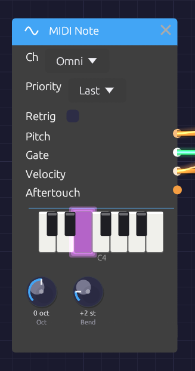
Held notes light up on the piano display.MIDI Note plays a monophonic voice from a MIDI device: a keyboard, a pad controller, or a DAW or sequencer sending MIDI. It turns the notes into a V/Oct Pitch, a Gate, a Velocity and an Aftertouch signal that any module can use.
When several keys are held, Priority decides which one sounds, as on a classic monosynth. To play chords, use Poly MIDI.
Outputs
| Port | Signal Type | Description |
|---|---|---|
| Pitch | Control (Orange) | The sounding note as V/Oct, with pitch bend. C4 (MIDI note 60) is 0.0 |
| Gate | Gate (Green) | High while any key is held |
| Velocity | Control (Orange) | The sounding note's velocity, 0 to 1 |
| Aftertouch | Control (Orange) | Channel pressure, 0 to 1 |
Parameters
| Control | Range | Default | Description |
|---|---|---|---|
| Ch (Channel) | Omni / 1 – 16 | Omni | The MIDI channel to listen to. Omni hears all of them |
| Priority | Last / Low / High | Last | Which held key sounds |
| Retrig (Retrigger) | Off / On | Off | Restarts the gate when you move between held keys |
| Oct (Octave) | −4 to +4 | 0 | Shifts every note by whole octaves |
| Bend (Bend Range) | 0 – 12 semitones | 2 | How far the pitch bend wheel bends at full travel |
Choosing a MIDI device
MIDI comes in from the device chosen in MIDI In on the toolbar. The menu lists every MIDI input the system can see. Pick one and the dot beside its name fills in (●) once it's connected. None (Disconnect) lets go of it.
- Plugged in a device after starting Modular Synth? Open the menu and click 🔄 Refresh.
- Connection failed? The reason appears in the status bar at the bottom of the window, and the selection goes back to None. On Windows, a device another app already has open (a DAW, a browser, a controller's editor) can't be opened a second time, so close the other app and pick the device again.
- Switching or disconnecting a device releases any notes still held on it, so nothing sticks.
The choice isn't saved with the patch or between sessions. One device feeds every MIDI Note, Poly MIDI and MIDI Monitor module in the patch.
How notes become CV
- Note On raises the gate and moves Pitch to the note.
- Note Off drops the gate once every key is up. Pitch stays on the last note, so a release tail stays in tune.
- Pitch bend moves Pitch by up to ±Bend semitones. It glides over about 5 ms between the wheel's steps, so bends never zipper.
- Channel pressure appears on Aftertouch.
- All Notes Off (CC 123) and All Sound Off (CC 120) release every held key.
Each semitone is 1/12 on Pitch, so MIDI note 72 (C5) is +1.0 and note 48 (C3) is −1.0. With every tune knob at 0, the Oscillator plays C4 at 0.0, so MIDI Note plays it in tune with nothing to set.
Timing
MIDI is handled on the audio thread. Each message is stamped the moment it arrives and placed at the matching sample of the next audio buffer. Every note is delayed by the same amount, one audio buffer (a few milliseconds), so a steady sequence from a DAW plays back steady, with no jitter. Even the shortest note produces a gate.
Priority
When more than one key is held:
| Priority | The key that sounds | Good for |
|---|---|---|
| Last | The most recently pressed | Most playing |
| Low | The lowest | Basslines |
| High | The highest | Leads |
Release the sounding key and another held key takes over, so you can trill against a held note.
Retrigger
With Retrig off, playing legato (pressing a new key before releasing the old one) changes the pitch but keeps the gate high. The envelope carries on, for smooth, connected lines.
With Retrig on, each legato note drops the gate for a single sample, so the envelope starts again on every note.
MIDI Learn
Any knob in the patch can follow a MIDI controller (a mod wheel, a fader, a knob on your keyboard). This works with or without a MIDI Note module in the patch.
- Right-click the knob and choose Learn MIDI CC. A purple M badge blinks above it, and the status bar asks you to move a control.
- Move the knob or fader on your controller. The badge stops blinking: the knob is mapped.
The controller sweeps the knob's whole range, on any MIDI channel. Right-click a mapped knob to see its CC number, to Re-learn MIDI CC, or to Clear MIDI. Mappings are saved with the patch. Moves made by a controller aren't added to the undo history.
Patch examples
A monophonic voice:
[MIDI Note Pitch] ──> [Oscillator V/Oct]
[MIDI Note Gate] ──> [ADSR Gate]
[MIDI Note Velocity] ──> [ADSR Velocity]
[Oscillator Out] ──> [SVF Filter In]
[SVF Filter LowPass] ──> [VCA In]
[ADSR Out] ──> [VCA CV]
[VCA Out] ──> [Audio Output Mono]
Velocity on the ADSR Envelope makes harder notes louder. Patch Aftertouch into the filter's Cutoff to brighten a note as you press into the key.
Two voices on two channels, for a bass and a lead from one DAW:
[MIDI Note (Ch 1, Priority Low)] ──> [Bass voice]
[MIDI Note (Ch 2, Priority High)] ──> [Lead voice]
Troubleshooting
No sound. Press Play: MIDI only sounds while the patch is playing. Check that the device is selected in MIDI In and that its dot is filled. Set Ch to Omni in case the device sends on another channel. A MIDI Monitor shows whether anything is arriving at all.
Wrong pitch. Check Oct, and that the pitch bend wheel is centered.
Stuck note. Send All Notes Off from your controller, or select the device again in MIDI In. Either releases every held note.
Related modules
- Poly MIDI – polyphonic MIDI, for chords
- Keyboard – play from the computer keyboard instead
- MIDI Monitor – see the MIDI that's arriving
- ADSR Envelope – where Gate and Velocity usually go
Poly MIDI
Module ID input.poly_midi · Category Source
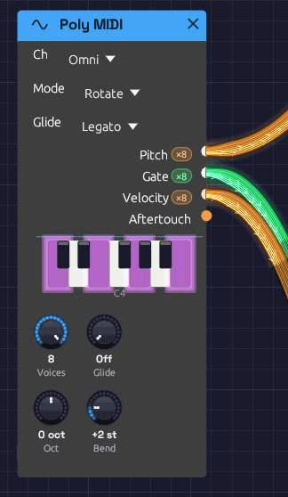
Each output carries one channel per voice.Poly MIDI plays chords. Every note you play gets a voice of its own, and its Pitch, Gate and Velocity cables carry all the voices at once, one channel per voice. Patch them into the polyphonic modules (Oscillator, SVF and Ladder filters, ADSR, VCA) and each held note plays through its own oscillator, filter and envelope. Let go of one note and only that note fades. See Polyphony for how polyphonic cables work.
It plays from the MIDI device chosen in MIDI In on the toolbar (see Choosing a MIDI device). While a Poly MIDI module is in the patch, the computer keyboard plays it too, on the same keys as the Keyboard module, so you can play chords without a MIDI keyboard. Those notes arrive on channel 1 at velocity 100.
Outputs
| Port | Signal Type | Channels | Description |
|---|---|---|---|
| Pitch | Control (Orange) | One per voice | Each voice's note as V/Oct, with pitch bend |
| Gate | Gate (Green) | One per voice | High while the voice's key, or the sustain pedal, holds its note |
| Velocity | Control (Orange) | One per voice | Each note's velocity, 0 to 1 |
| Aftertouch | Control (Orange) | 1 | Channel pressure, 0 to 1, shared by every voice |
Once the patch is playing, each polyphonic output shows its channel count in a small pill beside its label: ×8 means it carries eight voices.
Parameters
| Control | Range | Default | Description |
|---|---|---|---|
| Ch (Channel) | Omni / 1 – 16 | Omni | The MIDI channel to listen to. Omni hears all of them |
| Mode (Allocation) | Rotate / Reuse | Rotate | How a new note picks its voice |
| Voices | 1 – 8 | 8 | How many notes can sound at once, and so how many channels the cables carry |
| Oct (Octave) | −4 to +4 | 0 | Shifts every note by whole octaves |
| Bend (Bend Range) | 0 – 12 semitones | 2 | How far the pitch bend wheel bends every voice |
Each voice runs a full copy of every polyphonic module downstream, so eight voices cost about eight times the CPU of one. If a patch is heavy, turn Voices down.
Voice allocation
Rotate gives each new note the next free voice in turn. A released note keeps ringing through its release while the next note sounds on a different voice, so release tails overlap naturally.
Reuse sends a note played again back to the voice that last played it, the way a piano string is struck again. Any other note takes the voice that has been free the longest, which gives release tails the most time to finish.
In either mode, a note played again while it's still sounding (held by the sustain pedal, say) restarts on its own voice rather than taking a second one.
Voice stealing
When every voice is busy, a new note takes one over. It chooses:
- a voice the sustain pedal is holding (its key already up), oldest first;
- otherwise, the oldest note still held.
The taken voice's gate drops for one sample, so its envelope starts again for the new note.
Sustain pedal
The sustain pedal (CC 64) holds notes after their keys come up. Lifting it releases them all. All Notes Off (CC 123) and All Sound Off (CC 120) release everything, pedal or not.
Pitch bend glides over about 5 ms, as on MIDI Note, and MIDI arrives on the exact sample it's scheduled for.
Patch example
[Poly MIDI Pitch] ──> [Oscillator V/Oct]
[Poly MIDI Gate] ──> [ADSR Gate]
[Poly MIDI Velocity] ──> [ADSR Velocity]
[Oscillator Out] ──> [Ladder Filter In]
[Ladder Filter LP24] ──> [VCA In]
[ADSR Out] ──> [VCA CV]
[VCA Out] ──> [Audio Output Mono]
Hold a chord and each note has its own oscillator, filter and envelope. The Audio Output is a mono module, so it hears the voices summed. Voices add up, so a four-note chord is about four times as loud as one note: leave headroom with the VCA's Level. The Lush Pad example is built this way.
Related modules
- MIDI Note – monophonic MIDI, with note priority
- Keyboard – the computer keyboard, monophonic
- ADSR Envelope – one envelope per voice
SVF Filter
Module ID filter.svf · Category Filter
 The response curve on the node is computed from the filter itself, so it matches what you hear.
The response curve on the node is computed from the filter itself, so it matches what you hear.
The SVF (state variable filter) is the all-purpose filter: one input, four outputs, all running at once. LowPass darkens, HighPass thins, BandPass keeps a band around the cutoff and Notch takes one out. Patch whichever you need, or several at once, without switching modes.
It is a 12 dB/octave filter with an analog-style resonance. Turn the resonance up and the peak grows and saturates rather than getting louder without limit; turn it all the way and the filter sings on its own as a clean sine at the cutoff. Cutoff moves in octaves, so a sweep sounds even from bass to treble, and it stays stable right up to 20 kHz.
For a thicker, steeper lowpass, see the Ladder Filter.
Inputs
| Port | Signal Type | Description |
|---|---|---|
| In | Audio (Blue) | Audio to filter |
| Cutoff | Control (Orange) | Cutoff CV, 1 per octave: +1 doubles the cutoff, -1 halves it. The same scale as V/Oct, so a keyboard's pitch tracks directly |
| Resonance | Control (Orange) | Adds to the Res knob: +1 adds 50% |
Cutoff and Resonance modulate around their knobs. The knob sets the center, and stays live while a cable is patched in.
Outputs
| Port | Signal Type | Description |
|---|---|---|
| LowPass | Audio (Blue) | Passes frequencies below the cutoff |
| HighPass | Audio (Blue) | Passes frequencies above the cutoff |
| BandPass | Audio (Blue) | Passes a band around the cutoff |
| Notch | Audio (Blue) | Removes a band around the cutoff and passes the rest |
Parameters
| Knob | Range | Default | Description |
|---|---|---|---|
| Cutoff | 20 Hz – 20 kHz | 1000 Hz | Where the filter starts cutting |
| Res (Resonance) | 0 – 100% | 50% | Peak at the cutoff. Self-oscillates above about 97% |
| Drive | 1x – 10x | 1x | Input gain into a soft saturator, for warmth and grit |
The four outputs
LowPass is the classic subtractive synth filter. It rolls off everything above the cutoff at 12 dB per octave, taking the edge off a bright oscillator. Most patches start here.
HighPass is the mirror image: it removes everything below the cutoff. Use it to thin a sound out, clear rumble, or leave room for a bass part.
BandPass keeps a band around the cutoff and rolls off both sides. The band narrows as resonance rises. It gives vocal, nasal and telephone-like tones, and swept by an envelope or LFO it becomes a wah.
Notch removes a band around the cutoff and leaves the rest. The notch is deepest exactly at the cutoff and narrows as resonance rises. It equals LowPass and HighPass added together. Swept slowly, it gives a phaser-like movement that hollows a sound without darkening it.
Resonance and self-oscillation
Resonance feeds part of the filter's output back into itself, which adds a peak at the cutoff. A little (20 to 40%) adds character; a lot (70 to 90%) gives the squelchy, whistling peak of an acid bassline. The feedback runs through a saturator, so a loud input at high resonance pushes back instead of running away.
Above about 97% the filter self-oscillates:
- It produces a sine at the cutoff frequency, with nothing patched into In. The oscillation grows out of a tiny noise floor, like circuit noise in an analog filter.
- The pitch lands within a few cents of the Cutoff knob, so the knob reads as a pitch.
- The saturator holds the level at about -12 dBFS.
- Patch a keyboard's Pitch into Cutoff and it plays in tune.
Feed audio in while it oscillates and the two interact, with the resonance pushing back against loud input.
Drive
Drive raises the level into a soft saturator before the filter. At 1x it is nearly clean. Turning it up thickens the sound and then adds grit, and the louder signal also pushes harder against the resonance.
Patch examples
Basic filtering
[Oscillator Out (Saw)] ──> [SVF Filter In]
[SVF Filter LowPass] ──> [VCA In] ──> [Audio Output]
Start with the cutoff around 1000 Hz and Res at 20 to 40%, then turn the cutoff down for a darker sound.
Filter envelope
[Keyboard Gate] ──> [ADSR Gate]
[ADSR Out] ──> [SVF Filter Cutoff]
Set the Cutoff knob low (200 to 500 Hz). The envelope's 0-to-1 output raises the cutoff by up to one octave as it plays, so the knob sets where the sweep starts and the envelope carries it an octave higher. Add resonance to make the sweep more pronounced. A fast attack and decay gives a pluck; a slow attack, a swell.
Keyboard tracking
[Keyboard Pitch] ──> [Oscillator V/Oct]
──> [SVF Filter Cutoff]
The filter follows the notes you play, so high notes are as bright as low ones. The Cutoff input uses the V/Oct scale, so no scaling is needed.
Parallel modes
[Oscillator Out] ──> [SVF Filter In]
[SVF Filter LowPass] ──> [Mixer Ch 1]
[SVF Filter BandPass] ──> [Mixer Ch 2] ──> [Audio Output]
Blending lowpass with a little bandpass gives body plus a resonant edge.
Moving notch
[Oscillator Out (Saw)] ──> [SVF Filter In]
[LFO Out (slow)] ──> [SVF Filter Cutoff]
[SVF Filter Notch] ──> [Audio Output]
A slow LFO sweeping the notch gives a phaser-like whoosh.
Polyphony
The SVF Filter is polyphonic. Each voice on a polyphonic cable gets its own filter, with its own resonance, so a chord into In with an envelope on Cutoff opens each note separately. The knobs are shared by every voice. See Polyphony.
Bypass
Click the power switch at the left of the header, choose Bypass from the module's right-click menu, or press Ctrl + B to take the filter out of the signal path. All four outputs then pass In straight through, and the header and controls dim. Switching takes a 20 ms crossfade, so it doesn't click.
Related modules
- Ladder Filter, the steeper, saturating lowpass
- ADSR Envelope to sweep the cutoff with each note
- LFO for wobbles and phaser sweeps
- Attenuverter to narrow or invert a cutoff sweep
Ladder Filter
Module ID filter.ladder · Category Filter
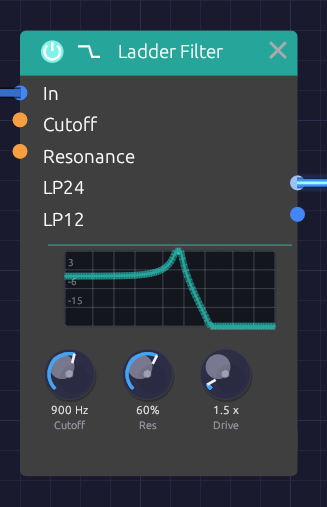
The ladder's response curve, drawn from the filter's own transfer function.The Ladder Filter models the transistor ladder Robert Moog patented in 1969: the filter behind the Minimoog, and still the sound most people mean by "analog". It is a 4-pole lowpass, built from four one-pole stages in a row, with the last stage's output fed back to the first to make the resonance.
What gives it its character:
- A steep 24 dB/octave slope that darkens a sound decisively, plus a gentler 12 dB/octave tap from the middle of the ladder.
- Saturation at every stage. Push it with Drive and it rounds off and thickens rather than clipping. The output never goes past full scale, however hard you drive it.
- Bass compensation. The original ladder loses low end as resonance rises. This one adds the lost bass back, so turning up the resonance adds a peak without thinning the sound.
- Self-oscillation over the top fifth of the resonance knob: a sine at the cutoff frequency, in tune to within a cent or two.
- 2x oversampling. The saturators run at twice the sample rate, so a high note driven hard stays clean instead of picking up inharmonic aliasing.
Inputs
| Port | Signal Type | Description |
|---|---|---|
| In | Audio (Blue) | Audio to filter |
| Cutoff | Control (Orange) | Cutoff CV, 1 per octave: +1 doubles the cutoff, -1 halves it. The same scale as V/Oct, so a keyboard's pitch tracks directly |
| Resonance | Control (Orange) | Adds to the Res knob: +1 adds 50% |
Cutoff and Resonance modulate around their knobs. The knob sets the center, and stays live while a cable is patched in.
Outputs
| Port | Signal Type | Description |
|---|---|---|
| LP24 | Audio (Blue) | 4-pole lowpass, 24 dB/octave: the classic ladder sound |
| LP12 | Audio (Blue) | 2-pole lowpass, 12 dB/octave, tapped halfway down the same ladder. Brighter, with the same resonance |
Parameters
| Knob | Range | Default | Description |
|---|---|---|---|
| Cutoff | 20 Hz – 20 kHz | 1000 Hz | Filter cutoff frequency |
| Res (Resonance) | 0 – 100% | 50% | Peak at the cutoff. Self-oscillates above 80% |
| Drive | 1x – 10x | 1x | Input gain into the saturating stages |
Ladder or SVF?
Both filters cover the musical range, self-oscillate, and take cutoff CV at 1 per octave. They differ in character:
| Ladder | SVF | |
|---|---|---|
| Slope | 24 dB/oct (and 12) | 12 dB/oct |
| Modes | Lowpass only | LowPass, HighPass, BandPass, Notch |
| Saturation | At every stage: thick, rounded | At the input and in the resonance |
| Self-oscillation | Top fifth of the knob, about -20 dBFS | Top few percent, about -12 dBFS |
Reach for the ladder for basses, leads and anything that should sound fat. Reach for the SVF Filter when you want the other modes, or a lighter, more transparent touch.
Drive
At 1x, a full-scale signal is already warmed slightly. Around 2x to 4x the ladder thickens audibly and the resonance takes on a growl. At 10x it is a distortion in its own right. The level stays roughly constant as you turn Drive up, because the saturating stages cap it.
Self-oscillation
Turn Res above about 80%. With nothing patched into In, a sine rises out of a tiny noise floor (like the hiss of real components) within a second or so. Its pitch is the Cutoff knob, accurate to a cent or two from bass to treble, and the same saturators that shape the sound hold it at about -20 dBFS.
Feed audio in while it oscillates and the two fight, with the classic squelch.
Patch examples
Fat bass
[Oscillator Out (Saw)] ──> [Ladder Filter In]
[Ladder Filter LP24] ──> [VCA In] ──> [Audio Output]
A saw through LP24 with the cutoff at a few hundred Hz is the classic fat bass. Switch to LP12 for a brighter, buzzier version of the same sound.
Envelope sweep
[Keyboard Gate] ──> [ADSR Gate]
[ADSR Out] ──> [Ladder Filter Cutoff]
The envelope's 0-to-1 output raises the cutoff by up to one octave above the knob. Set the knob where the sweep should start, and add resonance and a little Drive to make it bite.
Keyboard tracking
[Keyboard Pitch] ──> [Oscillator V/Oct]
──> [Ladder Filter Cutoff]
Because the Cutoff input is 1 per octave, a pitch CV patched straight in keeps the filter's brightness the same on every note. With the resonance high enough to self-oscillate and nothing patched into In, this turns the ladder into a sine oscillator that plays in tune.
Starting points
| Sound | Cutoff | Res | Drive | Output |
|---|---|---|---|---|
| Fat bass | 200 – 400 Hz | 30% | 2x | LP24 |
| Squelchy acid | 400 – 800 Hz | 70% | 3x | LP24 |
| Buzzy lead | 1 – 3 kHz | 40% | 1.5x | LP12 |
| Warm pad | 600 Hz | 20% | 1x | LP24 |
| Sine voice | Played from the keyboard | 90% | 1x | LP24, nothing in In |
Polyphony
The Ladder Filter is polyphonic. Each voice on a polyphonic cable gets its own ladder, with its own resonance and saturation, and the knobs are shared by every voice. See Polyphony.
Bypass
Click the power switch at the left of the header, choose Bypass from the module's right-click menu, or press Ctrl + B. Both outputs then pass In straight through, with a 20 ms crossfade so the switch doesn't click.
Technical notes
- Each stage is a one-pole lowpass with a
tanhat its input. The first stage's input is the signal minus the fed-back output, so the sametanhsaturates the resonance. The loop is solved with zero delay (TPT), with the saturators linearized around a one-pass estimate of the current sample. That keeps the resonance in tune at high cutoffs. - The oversampler uses polyphase IIR halfband filters: flat to within 0.01 dB up to 20 kHz, with about 100 dB of stopband. In tests, a 5 kHz tone driven into the filter has 30 to 55 dB less audible aliasing than the same filter run at the base rate. At extreme Drive combined with high resonance the gain is smaller (about 10 dB), because the harmonics reach beyond even twice the sample rate.
Related modules
- SVF Filter, the multi-mode, lighter-touch filter
- Oscillator, the usual thing to filter
- ADSR Envelope to sweep the cutoff with each note
- LFO for wobbles and sweeps
ADSR Envelope
Module ID mod.adsr · Category Modulation
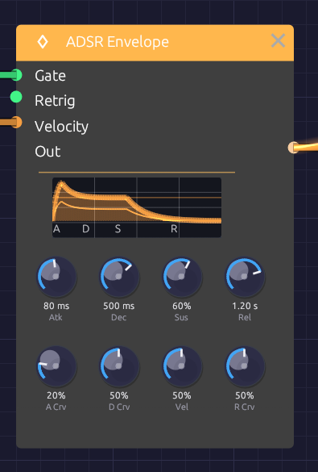
The display draws the same curve the audio follows.The ADSR Envelope gives each note a shape in time. When a gate goes high (a key goes down), it rises, falls to a held level, and when the gate goes low (the key comes up), it fades away: Attack, Decay, Sustain, Release. Patch it into a VCA to shape a note's loudness, or into a filter's Cutoff to shape its brightness.
Every stage takes exactly the time on its knob: a 100 ms release is silent 100 ms after you let go. Each stage's curve knob sets its shape, from a straight line to a deep analog curve.
Inputs
| Port | Signal Type | Description |
|---|---|---|
| Gate | Gate (Green) | A rising edge starts the attack; a falling edge starts the release |
| Retrig | Gate (Green) | While the gate is held, a rising edge restarts the attack from the current level |
| Velocity | Control (Orange) | Note velocity (0.0 to 1.0), read at each note-on. Scales the peak; see Vel |
Outputs
| Port | Signal Type | Description |
|---|---|---|
| Out | Control (Orange) | Envelope level, 0.0 to 1.0 |
Parameters
The knobs sit in two rows: the times and level on top, and under each time the curve of that stage.
| Knob | Range | Default | Description |
|---|---|---|---|
| Atk (Attack) | 1 ms – 10 s | 10 ms | Time to rise from the current level to the peak |
| Dec (Decay) | 1 ms – 10 s | 100 ms | Time to fall from the peak to the sustain level |
| Sus (Sustain) | 0 – 100% | 70% | Level held while the gate is high, as a fraction of the peak |
| Rel (Release) | 1 ms – 10 s | 300 ms | Time to fall from the current level to 0 after the gate goes low |
| A Crv (Attack Curve) | 0 – 100% | 20% | Attack shape: 0% is a straight ramp, higher bows it outward |
| D Crv (Decay Curve) | 0 – 100% | 50% | Decay shape: 0% is a straight ramp, higher drops fast then eases in |
| Vel (Velocity Amount) | 0 – 100% | 50% | How much the Velocity input scales the peak |
| R Crv (Release Curve) | 0 – 100% | 50% | Release shape: 0% is a straight ramp, higher drops fast then trails off |
The four stages
Attack begins when the gate goes high. The envelope rises from where it is (0, or wherever a release had got to) to its peak in exactly the attack time. A few milliseconds gives a percussive start; tens of milliseconds, the soft start of strings or a bowed pad; hundreds, a slow swell.
Decay begins the moment the attack reaches the peak. The envelope falls to the sustain level in exactly the decay time. Short decays are plucky; long ones ease gradually into the held note.
Sustain is a level, not a time: what the envelope holds for as long as the gate stays high. At 0% the note dies away even with the key held, like a plucked string. At 100% it holds at full level, like an organ. Turning it while a note is held glides to the new level over a few milliseconds, so it never clicks.
Release begins when the gate goes low. The envelope falls from wherever it is to 0 in exactly the release time, even if the key was let go mid-attack. Short releases stop abruptly; long ones leave a tail that lingers after the key comes up.
Curves
Each stage is an analog-style RC curve aimed past its target, so that it lands on time instead of creeping toward the target forever. The curve knob sets how far past:
- 0%: aimed far past, so the stage is a straight line.
- 20% (the attack default): aimed about 15% past the peak. The rise is nearly straight, which is what makes an analog attack sound punchy.
- 50% (the decay and release default): a classic RC fall. It drops quickly, then eases into its target, which suits how the ear hears loudness.
- 100%: a deep curve. Most of the change happens in the first fifth of the stage, followed by a long tail.
Curves change only the shape of a stage. Its time stays exactly the knob's.
Velocity
Patch a velocity source (the Velocity output of Keyboard Input, MIDI Note or Poly MIDI) into Velocity, and the Vel knob sets how much it matters:
- Vel 0%: every note peaks at 1.0.
- Vel 50%: the softest note peaks at 0.5 and the hardest at 1.0.
- Vel 100%: the peak equals the velocity.
Sustain is a fraction of the peak, so a soft note sustains lower too. With velocity patched, the node's display draws a faint second envelope for the softest note. The gap between the two lines is your dynamic range.
With nothing patched into Velocity, every note peaks at 1.0, whatever the knob says.
Patch examples
Volume envelope
[Keyboard Gate] ──> [ADSR Gate]
[ADSR Out] ──> [VCA CV]
[Oscillator Out] ──> [VCA In] ──> [Audio Output]
The basic shaped note. Without an envelope, an oscillator plays one endless tone.
Two envelopes: loudness and brightness
[Keyboard Gate] ──> [ADSR 1 Gate]
──> [ADSR 2 Gate]
[ADSR 1 Out] ──> [VCA CV]
[ADSR 2 Out] ──> [SVF Filter Cutoff]
Separate envelopes let the brightness move independently of the volume: a long release on ADSR 1 for sustained notes, and a short decay on ADSR 2 for a bright pluck at the start of each one.
Velocity to brightness
[Keyboard Velocity] ──> [ADSR 2 Velocity]
Add this to the two-envelope patch and harder notes come out brighter but no louder.
Inverted envelope
[ADSR Out] ──> [Attenuverter In] (Amount -1)
[Attenuverter Out] ──> [SVF Filter Cutoff]
The filter closes as the note opens and opens again as it releases, for "backwards" sweeps.
Retriggering a held note
[Clock Gate] ──> [ADSR Retrig]
While the key is held, each clock pulse restarts the attack from the current level, re-articulating the note in rhythm.
Starting points
| Shape | Attack | Decay | Sustain | Release | Notes |
|---|---|---|---|---|---|
| Pluck | 1 ms | 200 ms | 0% | 100 ms | D Crv toward 80% for a sharper snap |
| Pad | 500 ms | 1 s | 70% | 2 s | A Crv near 0% for an even swell |
| Organ | 1 ms | 10 ms | 100% | 50 ms | |
| Brass | 100 ms | 300 ms | 80% | 200 ms | The attack is the breath |
| Percussion | 1 ms | 100 ms | 0% | 50 ms |
Polyphony
The ADSR Envelope is polyphonic. Patch a polyphonic gate (from Poly MIDI) into Gate and every voice gets its own envelope, with its own stage and level, so each note of a chord attacks and releases on its own. See Polyphony.
Related modules
- VCA to shape loudness with the envelope
- SVF Filter and Ladder Filter to shape brightness
- Keyboard Input, MIDI Note and Poly MIDI for gates and velocity
- LFO for modulation that repeats instead of following the note
LFO
Module ID mod.lfo · Category Modulation
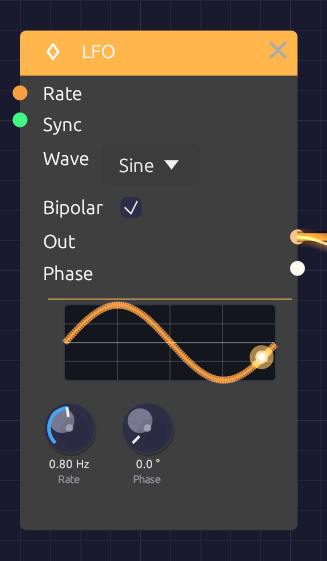
A dot rides the waveform display, in step with the LFO's real phase.The LFO (low-frequency oscillator) makes slow, repeating shapes for moving other modules: a filter that breathes, a vibrato, a tremolo, a pulse width that drifts. It runs from one cycle every 100 seconds up to 100 Hz, so it can also be pushed into the audio range for rough, buzzy modulation.
The display on the node draws one cycle of the selected waveform, with a dot that travels along it at the LFO's actual phase. What you see is where the modulation is right now.
Inputs
| Port | Signal Type | Description |
|---|---|---|
| Rate | Control (Orange) | Rate CV, 1 per octave: +1 doubles the rate, -1 halves it |
| Sync | Gate (Green) | A rising edge restarts the cycle |
Outputs
| Port | Signal Type | Description |
|---|---|---|
| Out | Control (Orange) | The modulation signal: -1 to 1 when Bipolar is on, 0 to 1 when it's off |
| Phase | Control (Orange) | Position in the cycle, as a ramp from 0 to 1 |
Parameters
| Control | Range | Default | Description |
|---|---|---|---|
| Rate | 0.01 – 100 Hz | 1 Hz | Speed of the cycle. The knob is logarithmic |
| Phase | 0 – 360° | 0° | Shifts where in the cycle the waveform starts |
| Wave | Sine / Triangle / Square / Saw | Sine | Dropdown on the node |
| Bipolar | On / Off | On | Checkbox on the node. On swings -1 to 1; off stays between 0 and 1 |
Waveforms
- Sine moves smoothly with no corners. The natural choice for vibrato, tremolo and slow sweeps.
- Triangle rises and falls in straight lines. It sounds steadier than a sine at the turnarounds.
- Square jumps between its two extremes, half the cycle at each. Use it for trills, choppy tremolo and two-step filter jumps.
- Saw ramps steadily up, then drops back. A rising sweep that resets each cycle.
At the start of a cycle the sine and triangle sit at the midpoint, heading up, the square is high, and the saw is at its lowest.
Bipolar and unipolar
With Bipolar on (the default), Out swings evenly around zero. Into a filter's Cutoff or an oscillator's V/Oct, that sweeps both above and below the knob's setting, which is what you want for vibrato.
With Bipolar off, Out stays between 0 and 1: the same shape, lifted and halved. Use it where modulation should only add, as with a VCA's CV, where a bipolar LFO would spend half its cycle silent.
Rate CV
The Rate input works in octaves, like V/Oct. +1 doubles the rate, +2 quadruples it, -1 halves it. Patching it dims the knob, but the rate you set stays the base the CV works from.
[LFO 2 (slow)] ──Out──> [LFO 1 Rate]
A slow LFO into another's Rate makes modulation that speeds up and slows down on its own.
Sync and phase
Each rising edge at Sync restarts the cycle from the Phase setting. Patch a Clock into it and the LFO starts over on every pulse, so its movement lines up with the beat.
Phase shifts the starting point. Two LFOs at the same rate, one at 0° and one at 180°, move in opposite directions; at 90° they chase each other.
The Phase output is the LFO's position in its cycle, a 0-to-1 ramp whatever waveform is selected. Use it as an extra rising sawtooth, unipolar, alongside Out.
Patch examples
Vibrato
[LFO Out] ──> [Oscillator Exp FM]
Rate around 5 to 6 Hz, Sine, Bipolar on. Turn the oscillator's Exp FM knob down to about 0.02 octaves (Shift-drag for fine steps) for a gentle ±24 cents.
Tremolo
[Oscillator Out] ──> [VCA In]
[LFO Out] ──> [VCA CV]
Rate 4 to 8 Hz, Sine or Triangle, Bipolar off, so the level dips and returns rather than cutting out for half of each cycle.
Filter sweep
[LFO Out] ──> [SVF Filter Cutoff]
The Cutoff input works in octaves, so a bipolar LFO at full level sweeps one octave either side of the knob. A slow Triangle gives a smooth wah; a Square jumps between two brightnesses. To sweep less, pass the LFO through an Attenuverter.
Pulse-width modulation
[LFO Out] ──> [Oscillator PWM]
With the oscillator on Square, a slow LFO (0.3 to 2 Hz) makes the tone shimmer and thicken like a chorus.
Stepped random
[LFO Out (fast Triangle)] ──> [Sample & Hold In]
[Clock Gate] ──> [Sample & Hold Trig]
Each Clock pulse freezes wherever the LFO happens to be, and Sample & Hold holds that value until the next one. Set the LFO's rate so it isn't a simple multiple of the Clock's and the steps take a long time to repeat. (The trigger has to be a gate: an LFO can't patch into Trig.)
Notes
- The LFO is monophonic. One LFO patched into a polyphonic module moves every voice together. See Polyphony.
- The Rate and Phase knobs are smoothed, so turning them while the LFO runs doesn't click or jump.
- Pressing Play starts every LFO from the beginning of its cycle.
Related modules
- ADSR Envelope for modulation that follows each note instead of repeating
- Clock to restart the LFO on the beat
- Attenuverter to scale, invert or offset the LFO
- Sample & Hold for stepped patterns
Stereo Delay
Module ID fx.delay · Category Effect
 Ping-pong, Sync and Tape switch the character; the knobs set the echoes
Ping-pong, Sync and Tape switch the character; the knobs set the echoes
The Stereo Delay plays back a copy of its input a moment later, then feeds that copy back in to make repeats. Filters in the feedback path darken or thin each repeat, P-P bounces the repeats between left and right, and Sync locks the time to the patch tempo.
Switch on Tape and it becomes a worn tape echo: the repeats waver in pitch, saturate as they build, and get darker each time around. Push the feedback far enough and they run away into the classic dub swell.
How it works
- Each channel is written into its own delay line.
- A read head plays the line back Time later. Reads usually fall between two samples, and a cubic (Catmull-Rom) interpolator fills the gap, so time changes and modulation glide smoothly instead of clicking or dulling the highs.
- The playback runs through HiCut and LoCut, is scaled by FB, and goes back into the line with the input. Each repeat passes through the filters once more than the one before it.
- Mix blends the dry input with the playback.
Inputs
| Port | Signal Type | Description |
|---|---|---|
| In L | Audio (Blue) | Left input |
| In R | Audio (Blue) | Right input. When unpatched, it copies In L |
| Time CV | Control (Orange) | Stretches or shrinks the delay time around the knob: ±1 swings it by ±50% |
| Feedback CV | Control (Orange) | Adds to the feedback around the knob: ±1 adds ±50% |
Outputs
| Port | Signal Type | Description |
|---|---|---|
| Out L | Audio (Blue) | Left echoes, mixed with the dry signal |
| Out R | Audio (Blue) | Right echoes, mixed with the dry signal |
Parameters
| Control | Range | Default | Description |
|---|---|---|---|
| Time | 1 ms – 2000 ms | 500 ms | Time between echoes. Ignored while Sync is on |
| FB (Feedback) | 0 – 100% | 50% | How much of each repeat comes back |
| Mix | 0 – 100% | 50% | Dry (0%) to echoes only (100%) |
| HiCut | 100 Hz – 20 kHz | 10 kHz | Lowpass in the feedback path: darkens each repeat |
| LoCut | 20 Hz – 2 kHz | 20 Hz | Highpass in the feedback path: thins each repeat |
| P-P (Ping-Pong) | On / Off | Off | Each repeat crosses to the other channel |
| Sync | Off, 1/4, 1/8, 1/8T, 1/16, 1/16T, 1/32, 1/4D, 1/8D | Off | Locks the time to a note length at the patch tempo |
| Tape | On / Off | Off | Tape echo character (see Tape mode) |
Time and FB keep working while their CV inputs are patched: the knob sets the center and the CV moves around it.
Feedback
In normal mode, feedback stops at 95%, and a soft clipper in the loop keeps the echoes from growing out of control. Around 30% gives a few echoes that fade naturally; 60% gives long trails; the top of the knob repeats almost forever.
In Tape mode the knob reaches further. See Runaway.
Tempo sync
Set Sync to a note length and the delay time follows the patch tempo. A Clock anywhere in the patch sets that tempo, so turning the Clock's BPM knob moves the echoes with it; they glide to the new time with a brief bend in pitch. With no Clock in the patch, the delay assumes 120 BPM. If a patch has more than one Clock, only one of them sets the tempo, so keep one Clock as the master.
| Division | Beats | At 120 BPM |
|---|---|---|
| 1/4D | 1½ | 750 ms |
| 1/4 | 1 | 500 ms |
| 1/8D | ¾ | 375 ms |
| 1/8 | ½ | 250 ms |
| 1/8T | ⅓ | 167 ms |
| 1/16 | ¼ | 125 ms |
| 1/16T | ⅙ | 83 ms |
| 1/32 | ⅛ | 62.5 ms |
Synced times are capped at 2 seconds. Time CV still works while synced, swinging the synced time.
Tape mode
Tape models a tape echo: a loop of tape passing a record head and a play head. Switching it crossfades in about 15 ms, so you can flip it while echoes are still sounding.
Wow and flutter. The play head wanders. A slow wow (about 0.5 Hz, plus a slower drift of the reel) and a fast flutter (6 to 10 Hz) bend the pitch of the repeats by a few cents. The four motions run at unrelated rates, so the pattern doesn't loop.
Record-head saturation. The input and the feedback are recorded together through a soft, slightly lopsided curve. Quiet signals pass unchanged; loud ones round off and pick up the even harmonics of magnetized tape. Because the saturation sits inside the loop, a busy echo squashes and thickens as it builds.
Tape loss. Tape loses top end every time it records, so each repeat is darker than the last. Longer delays mean slower tape and darker repeats: the loss starts around 7 kHz at 250 ms and falls to about 3.5 kHz at one second. HiCut still works on top of it.
Motor glide. Time changes glide over about a quarter of a second, like a motor finding its new speed, and the repeats swoop in pitch as they go.
Runaway
In Tape mode, FB above about 90% pushes the loop past unity gain. The echoes grow until the record head's saturation holds them: the dub runaway. The output stays bounded at any setting, so you can ride it. Pull FB back below 90% and the echoes die away again.
Bypass
Click the power switch in the node header, press Ctrl+B with the module selected, or choose Bypass from its right-click menu. In L passes straight to Out L and In R to Out R (In R still copies In L when unpatched). The switch crossfades over 20 ms. A bypassed delay stops running, and it starts from silence when you switch it back in, so old echoes don't come back with it.
Patch ideas
Slapback. Time 80–120 ms, FB 0%, Mix 30%, Tape on. A single, slightly smeared echo, like a 1950s vocal.
Dotted-eighth rhythm. Sync 1/8D, FB 40%, Mix 40%. Turn on P-P with a stereo source and the repeats fall between the beats, alternating sides.
Dub throw. Sync 1/4 or 1/8D, FB 60%, LoCut 150 Hz, Tape on. For a bar, push FB up to the top and let it run away, then pull it back.
Chorus from a delay. A short time with the read head moving bends the copy's pitch:
[LFO Out] ──> [Delay Time CV] Time 15–30 ms, FB 0–20%, Mix 50%
Ducking feedback. An inverted envelope pulls the feedback down on every hit, so the echoes swell back between them:
[Clock Gate] ──> [ADSR Gate]
[ADSR Out] ──> [Attenuverter In] (negative Amount)
[Attenuverter Out] ──> [Delay Feedback CV]
Related modules
- Reverb: a diffuse space instead of distinct echoes
- Chorus: thickening without echoes
- Clock: sets the tempo Sync follows
- LFO: modulates the delay time
Reverb
Module ID fx.reverb · Category Effect
 The room on the top row, its place in the mix below
The room on the top row, its place in the mix below
The Reverb puts a sound in a space: a dense wash of reflections that builds, blooms and dies away. It reaches from a small, splashy room to a tail that rings for half a minute.
Its knobs sit in two rows. The top row shapes the room and its tail (Size, Decay, Damp, Mod); the bottom row places it in the mix (PreD, Width, Mix).
How it works
The Reverb is an eight-line feedback delay network (FDN).
- Pre-delay holds the input back before anything else happens.
- A four-step diffuser spreads the sound across eight channels. Each step delays the channels by different amounts, flips the polarity of some, and mixes them all together, so one click becomes 8 echoes, then 64, then 512, then 4,096. These are the early reflections.
- Eight delay lines circulate the sound. On every pass the lines are mixed into each other, so each echo spawns eight more and the tail thickens into a smooth, noise-like decay.
- Each line has its own gain and damping filter, both calculated from that line's length, so the whole tail decays at the rate Decay sets and every line loses its highs at the same rate.
- The lines drift slowly in length (the Mod knob). This keeps resonances from settling in and adds a gentle chorus to the tail.
Simpler reverbs built from a few fixed comb filters tend to ring at the comb lengths, and sound metallic on snares and claps. The FDN's tail has no repeating period, so sharp transients spread into an even wash.
Inputs
| Port | Signal Type | Description |
|---|---|---|
| In L | Audio (Blue) | Left input |
| In R | Audio (Blue) | Right input. When unpatched, it copies In L |
Outputs
| Port | Signal Type | Description |
|---|---|---|
| Out L | Audio (Blue) | Left reverb, mixed with the dry signal |
| Out R | Audio (Blue) | Right reverb, mixed with the dry signal |
Parameters
| Knob | Range | Default | Description |
|---|---|---|---|
| Size | 0 – 100% | 50% | Room size: scales every delay in the network |
| Decay | 0.1 s – 30 s | 2.0 s | Time for the tail to fall by 60 dB |
| Damp (Damping) | 0 – 100% | 50% | How much faster the highs die than the lows |
| Mod | 0 – 100% | 25% | Slow drift of the delay lines: a chorus in the tail |
| PreD (Pre-Delay) | 0 ms – 100 ms | 0 ms | Silence before the reverb begins |
| Width | 0 – 100% | 100% | Stereo width of the reverb |
| Mix | 0 – 100% | 30% | Dry (0%) to reverb only (100%) |
The controls
Size
Size sets the dimensions of the room. The shortest delay line runs from 12 ms at 0% to 100 ms at 100%, and the early reflections scale with it. Small settings build up quickly, like a booth or a small room; large settings build slowly, like a hall.
Size and Decay are independent, so a small room can still ring for a long time. Turn Size while a tail is sounding and the lines glide to their new lengths, bending the tail's pitch for a moment instead of clicking.
Decay
Decay is the reverb time (RT60): how long the tail takes to fall by 60 dB. Measured on rendered impulse responses, it lands within about 5% of the knob across the whole Size range.
| Decay | Space |
|---|---|
| 0.1 – 0.5 s | Small room, booth |
| 0.5 – 1.5 s | Studio, medium room |
| 1.5 – 3 s | Hall, church |
| 3 – 10 s | Cathedral, warehouse |
| 10 s and up | Endless ambient wash |
Damp
Damping models soft surfaces absorbing high frequencies. It sets how fast 4 kHz dies relative to the lows: at 0% it lasts the full Decay time, and at 100% it dies ten times faster. Low frequencies always keep the full Decay. Low settings sound like tile and glass; high settings like carpet and curtains, and a darker reverb is easier to sit in a mix.
Mod
Mod lets each of the eight lines drift slowly in length, each at its own rate between about 0.3 and 1.1 Hz. The early reflections stay still.
At 0% the tail is static, the most literal setting, though long tails can show faint resonances. Around 15–35% (the default is 25%) the movement smooths long tails without drawing attention to itself. From 60% up it becomes an audible chorus in the tail: lush on pads, seasick on piano.
PreD
Pre-delay is the gap between the dry sound and the start of the reverb. Up to about 10 ms the reverb starts at once and the source feels close. At 20–40 ms the attack of each note comes through clearly before the room answers, which keeps vocals and plucks distinct. Toward 100 ms the gap becomes an audible sense of depth.
Width
Width sets how far apart the two sides of the reverb are. At 0% the reverb is mono, centered; at 100% the two sides come from different delay lines and are almost completely uncorrelated, so the tail fills the stereo field. Width affects only the reverb, not the dry signal.
Mix
Mix sets how far away the sound seems. Around 10–20% it sounds close and present, 20–40% places it at a natural distance in the room, and above 50% it recedes into the space. At 100% you hear only the reverb.
Bypass
Click the power switch in the node header, press Ctrl+B with the module selected, or choose Bypass from its right-click menu. In L passes straight to Out L and In R to Out R (In R still copies In L when unpatched). The switch crossfades over 20 ms. A bypassed reverb stops running, and it starts from silence when you switch it back in, so no old tail comes back with it.
Starting points
| Space | Size | Decay | Damp | Mod | PreD |
|---|---|---|---|---|---|
| Small bright room | 15% | 0.6 s | 20% | 10% | 0 ms |
| Room | 30% | 0.8 s | 50% | 20% | 10 ms |
| Chamber | 50% | 1.5 s | 40% | 25% | 20 ms |
| Hall | 70% | 3 s | 50% | 30% | 40 ms |
| Cathedral | 90% | 6 s | 40% | 30% | 80 ms |
| Endless | 100% | 20 s | 30% | 50% | 100 ms |
For a vocal or lead, start from the Chamber with Mix around 20% and Damp near 60%; the pre-delay keeps the words clear and the damping keeps the tail from hissing. For a pad, try the Hall with Mix 50% and Mod 70%: the chorus lives only in the tail, so the dry note stays steady.
Patch ideas
Stereo insert. A stereo source keeps its image through the reverb:
[Oscillator Out L] ──> [Reverb In L]
[Oscillator Out R] ──> [Reverb In R]
[Reverb Out L] ──> [Audio Output Left]
[Reverb Out R] ──> [Audio Output Right]
Shared room. Mix several voices into one reverb so they sound like they're in the same space:
[VCA 1 Out] ──> [Mixer Ch 1]
[VCA 2 Out] ──> [Mixer Ch 2]
[Mixer Out] ──> [Reverb In L] ──> [Audio Output]
Echoes of the room. Put a Delay after the reverb and the tail itself repeats in rhythm.
Related modules
- Delay: distinct echoes instead of a diffuse space
- Chorus: width and movement without a room
- EQ: shape the reverb's tone
- Mixer: feed several voices into one reverb
3-Band EQ
Module ID fx.eq · Category Effect
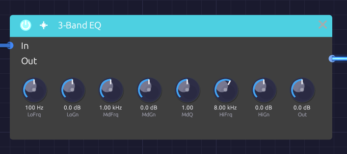
Low shelf, mid band and high shelf, left to right, with the output level lastThe 3-Band EQ boosts or cuts three regions of the spectrum: a low shelf for the bass, a fully parametric mid band, and a high shelf for the treble. Use it to fit a sound into a patch, take the mud out of a pad, put an edge on a lead, or darken a reverb tail.
Where a filter removes whole parts of the spectrum, an EQ leans on them, up to 15 dB either way. Every knob glides, so you can sweep the mid band while a note plays without zipper noise.
Inputs
| Port | Signal Type | Description |
|---|---|---|
| In | Audio (Blue) | Signal to equalize |
Outputs
| Port | Signal Type | Description |
|---|---|---|
| Out | Audio (Blue) | Equalized signal |
Parameters
| Knob | Range | Default | Description |
|---|---|---|---|
| LoFrq (Low Freq) | 20 Hz – 500 Hz | 100 Hz | Low shelf frequency |
| LoGn (Low Gain) | −15 dB – +15 dB | 0 dB | Boost or cut below the low shelf frequency |
| MdFrq (Mid Freq) | 100 Hz – 10 kHz | 1 kHz | Center of the mid band |
| MdGn (Mid Gain) | −15 dB – +15 dB | 0 dB | Boost or cut at the mid frequency |
| MdQ (Mid Q) | 0.1 – 10 | 1.0 | Width of the mid band. Higher is narrower |
| HiFrq (High Freq) | 2 kHz – 20 kHz | 8 kHz | High shelf frequency |
| HiGn (High Gain) | −15 dB – +15 dB | 0 dB | Boost or cut above the high shelf frequency |
| Out (Output) | −12 dB – +12 dB | 0 dB | Level after the EQ |
With every gain at 0 dB the EQ is transparent.
The bands
The three bands run in series: low shelf, then mid, then high shelf.
Low and high shelves
A shelf raises or lowers everything beyond its frequency by the same amount, like a bass or treble knob on a stereo. The LoFrq and HiFrq knobs set the shelf's midpoint: the frequency where it has reached half its gain. The shelves are as steep as they can be without overshooting, so a boost rises cleanly to its level with no bump at the corner.
The shelves have no Q of their own. To affect a narrower region at the bottom or top, use the mid band.
Mid band
The mid band is a bell-shaped peak or dip centered on MdFrq. MdQ sets its width:
- 0.1 to 1: broad and gentle, spanning several octaves. Good for tonal shaping.
- 1 to 4: focused but still musical.
- 4 to 10: narrow and surgical, for picking out a single resonance.
A good rule is to cut narrow and boost wide: narrow boosts sound unnatural, while narrow cuts can remove a problem without anyone hearing that it's gone.
Bypass
Click the power switch in the node header, press Ctrl+B with the module selected, or choose Bypass from its right-click menu. In passes straight to Out. The switch crossfades over 20 ms, so you can compare the EQ'd and original sound mid-note.
Finding a problem frequency
- Set MdQ high, around 5 to 8.
- Boost MdGn to +10 dB or so.
- Sweep MdFrq slowly until the ringing or boominess jumps out.
- Turn MdGn down below 0 dB to cut it.
Where things live
| Region | Frequency | Character |
|---|---|---|
| Sub | 20 – 60 Hz | Felt more than heard |
| Bass | 60 – 250 Hz | Weight, warmth, punch |
| Low mids | 250 – 500 Hz | Body; too much is muddy |
| Mids | 500 Hz – 2 kHz | Presence; too much is boxy or nasal |
| Upper mids | 2 – 5 kHz | Definition and attack; too much is harsh |
| Highs | 5 – 10 kHz | Brightness |
| Air | 10 – 20 kHz | Sparkle and openness |
Starting points
| Goal | Settings |
|---|---|
| Take out mud | MdFrq 300 Hz, MdGn −4 dB, MdQ 2 |
| Remove boxiness | MdFrq 500 Hz, MdGn −3 dB, MdQ 2.5 |
| Add warmth | LoFrq 100 Hz, LoGn +3 dB |
| Add presence | MdFrq 3 kHz, MdGn +3 dB, MdQ 0.8 |
| Add air | HiFrq 12 kHz, HiGn +3 dB |
| Thin, telephone-like | LoFrq 400 Hz, LoGn −15 dB; HiFrq 3 kHz, HiGn −15 dB; MdFrq 1.5 kHz, MdGn +6 dB |
Boosts raise the overall level. Pull Out down to match the bypassed level before deciding whether the EQ is helping.
Patch ideas
After distortion. Distortion's harshness usually sits in the upper mids. A broad mid cut around 3 kHz after it smooths the edge without dulling the sound the way a lowpass would:
[Distortion Out] ──> [EQ In] ──> [Audio Output Mono]
Darker reverb. The EQ is mono, so to shape a stereo reverb use one EQ per side, each cutting the lows (LoGn −6 dB) to keep the tail from clouding the bass.
Channel strip. EQ, then compress: the compressor then responds to the tone you chose rather than to the frequencies you were about to cut.
[VCA Out] ──> [EQ In]
[EQ Out] ──> [Compressor In]
Related modules
- SVF Filter: for removing whole ranges, or sweeping dramatically
- Compressor: often follows the EQ
- Distortion: creates harmonics worth shaping
- Reverb: an EQ after it shapes the tail
Distortion
Module ID fx.distortion · Category Effect
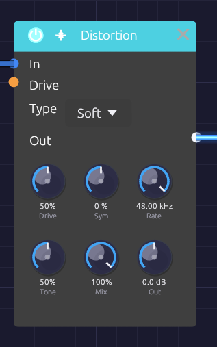
The character of the curve on top, its color and level belowThe Distortion adds harmonics by pushing a signal into a curve: rounding it off, clipping it, folding it back on itself, or crushing it into steps. Five types cover everything from a touch of warmth on a bass to a sine folded into a buzzing, vocal tone.
Every curve runs at four times the sample rate with antiderivative anti-aliasing (ADAA). Even full drive on a high note adds only harmonics of that note, not the inharmonic "digital fizz" a naive distortion folds back into the audible range. The dry signal is mixed in at the same oversampled rate and aligned to the sample, so Mix blends cleanly without comb filtering.
Inputs
| Port | Signal Type | Description |
|---|---|---|
| In | Audio (Blue) | Signal to distort |
| Drive CV | Control (Orange) | Moves Drive around the knob: ±1 adds ±50% |
Outputs
| Port | Signal Type | Description |
|---|---|---|
| Out | Audio (Blue) | Distorted signal |
Parameters
| Control | Range | Default | Description |
|---|---|---|---|
| Type | Soft / Hard / Fold / Bit / Tube | Soft | Distortion curve (dropdown on the node) |
| Drive | 0 – 100% | 50% | How hard the signal is pushed into the curve |
| Sym (Symmetry) | −100% – +100% | 0% | Fold only: shifts the wave off center before it folds |
| Rate | 100 Hz – 48 kHz | 48 kHz | Bit only: the crushed sample rate. The top of the range is off |
| Tone | 0 – 100% | 50% | Lowpass after the curve, from 200 Hz to 20 kHz |
| Mix | 0 – 100% | 100% | Dry (0%) to distorted (100%) |
| Out (Output) | −12 dB – +12 dB | 0 dB | Level after distortion |
Drive keeps working while Drive CV is patched: the knob sets the center and the CV moves around it.
Types
Soft
Smooth tanh saturation that rounds off peaks. Drive raises the input gain from 1x to 11x. It produces odd harmonics that fall away smoothly, and compresses as it goes: warmth at low drive, fuzz at high drive.
Hard
Clipping that flattens the peaks. Drive lowers the clipping point from full scale to a tenth of it. Bright, buzzy odd harmonics, with a transistor-fuzz edge.
Fold
A wavefolder in the West Coast tradition of the Serge and Buchla folders. Past the clipping point, the wave reflects back toward zero instead of flattening, then reflects again. Drive raises the gain from 1x to 6x, and each step adds another fold and another pair of peaks, up to about three folds per half-wave at full scale. The corners of each fold are rounded, as a real diode folder's are.
A plain sine comes out bright, vocal or metallic, and sweeping Drive with CV gives the classic wavefolder sweep.
Sym shifts the wave off center before it folds. The two halves then fold differently and even harmonics appear. Near ±100%, a quiet sine sits on a fold's peak and comes out an octave up.
Bit
Bit-depth and sample-rate reduction, for lo-fi character.
- Drive lowers the bit depth from 16 bits at 0% to 2 bits at 100%.
- Rate holds each sample for longer, like an old sampler. Below a few kHz, the crushed rate's mirror images ring out as metallic, inharmonic tones; that aliasing is the sound. It depends only on Rate: the engine's own sample rate adds none.
Tube
Asymmetric saturation, like a triode biased off center. Drive raises the input gain from 1x to 11x. The two halves of the wave saturate at different levels, so even harmonics appear from the first touch of drive: warm, thick, slightly hollow. The DC offset this creates is removed automatically.
Tone
Tone is a gentle lowpass on the distorted signal, spaced evenly in octaves from 200 Hz at 0% to 20 kHz at 100%. 50% is about 2 kHz, 65% about 4 kHz, 75% about 6 kHz. Distortion creates a lot of high harmonics, and Tone is the quickest way to take the harshness off them. It affects only the distorted signal, not the dry.
Bypass
Click the power switch in the node header, press Ctrl+B with the module selected, or choose Bypass from its right-click menu. In passes straight to Out. The switch crossfades over 20 ms.
Starting points
| Sound | Type | Drive | Tone | Mix |
|---|---|---|---|---|
| Subtle warmth | Soft | 20% | 100% | 50% |
| Bass grit | Soft | 40% | 50% | 70% |
| Tape-ish thickening | Tube | 25% | 60% | 60% |
| Aggressive lead | Hard | 80% | 65% | 100% |
| Lo-fi sampler | Bit | 50% (Rate 8 kHz) | 100% | 80% |
Distortion raises the level, especially at high drive. Use Out to match the bypassed level before you judge whether it sounds better.
Patch ideas
Wavefolded sine. A sine has nothing for a filter to remove; folding gives it harmonics first:
[Oscillator Out] ──> [Distortion In] Type Fold, Drive 50%
[Distortion Out] ──> [SVF Filter In]
Octave fold. With Type Fold, Drive 0% and Sym 100%, a sine comes out an octave up.
Envelope-driven drive. More distortion on the attack, cleaner as the note sustains:
[ADSR Out] ──> [Distortion Drive CV]
Before or after the filter. Distortion before the filter gives the filter more harmonics to work on, and the filter tames them. Distortion after the filter adds grit to whatever the filter left, so it changes character as the cutoff moves. Before the VCA, the amount of distortion stays constant; after it, quiet notes stay clean and loud ones break up.
Related modules
- SVF Filter and Ladder Filter: shape the harmonics distortion adds. The Ladder has its own saturating Drive
- Compressor: control dynamics before or after
- EQ: fine-tune the distorted tone
Chorus
Module ID fx.chorus · Category Effect
 Voices and Shape are dropdowns; the knobs set the sweep
Voices and Shape are dropdowns; the knobs set the sweep
The Chorus thickens a sound by layering copies of it, each delayed by a few milliseconds that keep changing. The moving delays bend each copy's pitch slightly up and down, and the copies beat against each other and against the original, the way several players on the same part never quite line up.
It is true stereo, and it makes a mono source wide on its own. Short delays and a little feedback take it into flanging.
How it works
- Each channel has its own delay line: left stays left, right stays right.
- Each voice reads both lines through a pair of taps, and an LFO sweeps each tap's delay around Delay. At full Depth the delay swings all the way from zero to twice the Delay time.
- The voices are spaced evenly around the LFO cycle, so they never move in step.
- The voices are summed and blended with the dry signal by Mix.
True stereo
A stereo source keeps its image: nothing patched into In L ever reaches Out R.
With In R unpatched, In L feeds both sides and the chorus creates the width itself. Each right tap's LFO sits halfway between two left taps (180° away with one voice, 90° with two), so the two sides always bend in pitch in opposite directions.
Changing Voices fades voices in or out and slides the rest to their new places on the cycle, so it never clicks.
Inputs
| Port | Signal Type | Description |
|---|---|---|
| In L | Audio (Blue) | Left input |
| In R | Audio (Blue) | Right input. When unpatched, it copies In L |
| Rate CV | Control (Orange) | Speeds up or slows down the sweep: ±1 changes Rate by ±50% |
| Depth CV | Control (Orange) | Adds to Depth: ±1 adds ±50% |
Outputs
| Port | Signal Type | Description |
|---|---|---|
| Out L | Audio (Blue) | Left chorus, mixed with the dry signal |
| Out R | Audio (Blue) | Right chorus, mixed with the dry signal |
Parameters
| Control | Range | Default | Description |
|---|---|---|---|
| Rate | 0.1 Hz – 10 Hz | 1 Hz | Speed of the sweep |
| Depth | 0 – 100% | 50% | How far the delay sweeps around Delay |
| Delay | 1 ms – 30 ms | 10 ms | Center delay time |
| FB (Feedback) | −0.5 – +0.5 | 0 | Feeds the voices back into the delay lines, for flanging. Negative values sound hollower |
| Mix | 0 – 100% | 50% | Dry (0%) to chorus only (100%) |
| Voices | 1 – 4 | 2 | Number of voices (dropdown on the node) |
| Shape | Sine / Tri | Sine | LFO waveform (dropdown on the node) |
While Rate CV or Depth CV is patched, its knob dims and follows the incoming signal, and you can't turn it. The CV still works around the knob's last position, so set Rate and Depth before you patch them.
Shaping the sound
Rate and Depth. Slow rates sway gently; fast rates turn into vibrato. Light depth thickens without drawing attention; heavy depth wobbles until it sounds out of tune. The two work together, since the pitch bend depends on how fast the delay is changing: a fast rate needs less depth.
Delay. Below about 5 ms the copies comb-filter against the dry sound, and with some feedback it becomes a flanger. From 5 to 15 ms is classic chorus. From 15 to 30 ms the copies separate into a wide, doubled sound.
Voices. One voice is the simplest, almost flanger-like, with the two sides sweeping in opposite directions. Two is the classic stereo chorus. Three and four build toward a thick ensemble, at some cost in clarity. The output stays at about the same loudness whatever the voice count.
Shape.
| Shape | Character |
|---|---|
| Sine | Smooth and vocal: the pitch eases in and out of each bend |
| Tri | The delay sweeps at a constant speed, so each half-cycle holds one steady detune. Glassier, closer to the classic bucket-brigade choruses |
Switching shape morphs between the two over 20 ms.
Feedback. Feedback deepens the comb-filter peaks and makes the sweep ring. The loop uses the voices' average, so its gain never exceeds the knob however many voices are running.
Bypass
Click the power switch in the node header, press Ctrl+B with the module selected, or choose Bypass from its right-click menu. In L passes straight to Out L and In R to Out R (In R still copies In L when unpatched). The switch crossfades over 20 ms.
Starting points
| Sound | Rate | Depth | Delay | FB | Voices | Mix |
|---|---|---|---|---|---|---|
| Subtle thickening | 0.3 Hz | 20% | 5 ms | 0 | 2 | 30% |
| Classic chorus | 0.5 Hz | 40% | 8 ms | 0 | 2 | 50% |
| String ensemble | 0.8 Hz | 60% | 15 ms | 0 | 4 | 60% |
| Flanger | 0.2 Hz | 70% | 2 ms | +0.4 | 1 | 50% |
| Vibrato | 5 Hz | 30% | 5 ms | 0 | 1 | 100% |
At 100% Mix you hear only the moving copies, without the dry signal to beat against, so the chorus becomes pure vibrato.
On bass, keep Depth and Mix low, or the low end turns vague.
Patch ideas
Widen a mono voice. Patch only In L and take both outputs:
[VCA Out] ──> [Chorus In L]
[Chorus Out L] ──> [Audio Output Left]
[Chorus Out R] ──> [Audio Output Right]
Before the space. Chorus usually goes before time-based effects, so the reverb smears the movement together:
[VCA Out] ──> [Chorus In L]
[Chorus Out L] ──> [Reverb In L]
[Chorus Out R] ──> [Reverb In R]
Drifting chorus. A very slow LFO into Rate CV makes the chorus speed itself wander.
Related modules
- Delay: longer echoes
- Reverb: chorus into reverb for ambient washes
- Oscillator: unison detune thickens at the source
- LFO: modulates Rate and Depth
Compressor
Module ID fx.compressor · Category Effect
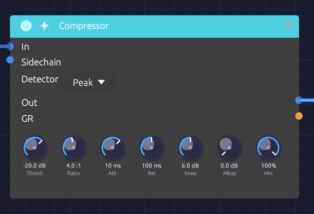
Threshold and Ratio set how much; Atk and Rel set how fastThe Compressor turns down a signal when it gets loud and leaves it alone when it's quiet. That evens out the level of a bass line, adds snap to percussion, holds a pad steady, or, with a kick in the Sidechain input, makes a pad pump in time.
It also puts its gain reduction out as a control signal on GR, so the amount of compression can move other parts of the patch.
How it works
- The detector measures the level of In, or of Sidechain when something is patched there.
- When the level rises above Thresh, the compressor works out how far to turn it down: Ratio sets how much of the overshoot gets through.
- Atk sets how quickly that reduction is applied, and Rel how quickly it lets go.
- Mkup adds gain back afterward, and Mix blends the result with the dry input.
Attack and release shape the gain reduction, in dB, not the measured level. So a steady tone above the threshold comes out exactly where the ratio says it should, however fast or slow the timing knobs are set; attack and release only decide how it gets there.
Inputs
| Port | Signal Type | Description |
|---|---|---|
| In | Audio (Blue) | Signal to compress |
| Sidechain | Audio (Blue) | Signal the detector listens to instead of In. When unpatched, the detector listens to In |
Outputs
| Port | Signal Type | Description |
|---|---|---|
| Out | Audio (Blue) | Compressed signal |
| GR | Control (Orange) | Gain reduction as CV: 0 is no reduction, 1 is 60 dB |
Parameters
| Control | Range | Default | Description |
|---|---|---|---|
| Thresh (Threshold) | −60 dB – 0 dB | −20 dB | Level above which compression begins |
| Ratio | 1:1 – 20:1 | 4:1 | How strongly levels above the threshold are reduced |
| Atk (Attack) | 0.1 ms – 100 ms | 10 ms | How fast compression clamps down |
| Rel (Release) | 10 ms – 1000 ms | 100 ms | How fast compression lets go |
| Knee | 0 dB – 12 dB | 6 dB | Width of the soft knee around the threshold. 0 is a hard knee |
| Mkup (Makeup) | 0 dB – +24 dB | 0 dB | Gain added after compression |
| Mix | 0 – 100% | 100% | Dry (0%) to compressed (100%), for parallel compression |
| Detector | Peak / RMS | Peak | What the detector measures (dropdown on the node) |
The controls
Threshold and ratio
Above the threshold, the ratio sets how many decibels go in for each decibel that comes out. At 2:1, a signal 10 dB over the threshold comes out 5 dB over. At 4:1 it comes out 2.5 dB over. At 20:1, the top of the range, the compressor is close to a limiter: almost nothing gets past the threshold.
For example, with Thresh at −20 dB and Ratio at 4:1:
| In | Out |
|---|---|
| −30 dB | −30 dB (below the threshold, untouched) |
| −20 dB | −20 dB (at the threshold) |
| −10 dB | −17.5 dB (10 dB over becomes 2.5 dB over) |
Knee
With a hard knee (0 dB), compression starts abruptly at the threshold. A soft knee eases it in over a band centered on the threshold: with the default 6 dB, compression starts 3 dB below the threshold and reaches the full ratio 3 dB above it. Soft knees sound more transparent; hard knees more obviously compressed.
Attack and release
Atk decides whether the start of each note gets through. Below about 1 ms the compressor catches every transient, which can flatten a sound. Around 10 to 30 ms, the first moment of each hit punches through before the compressor reacts, which is how compression adds snap to drums. Slower still, and only sustained parts of the sound are reduced.
Rel decides how the level recovers. A fast release (under 50 ms) recovers between notes and can pump audibly; 50 to 150 ms is musical for most material; slow releases hold the reduction for a smooth, sustained squash.
Detector: Peak or RMS
| Detector | Measures | Character |
|---|---|---|
| Peak | Every peak of the waveform | Catches transients and keeps peaks in check. Good for drums and limiting |
| RMS | Average power over about 20 ms | Follows loudness, as the ear does. Smoother, gentler leveling for pads, buses and sustained sounds |
A sine reads 3 dB lower on RMS than on Peak, so the same settings compress it a little less.
Bypass
Click the power switch in the node header, press Ctrl+B with the module selected, or choose Bypass from its right-click menu. In passes straight to Out; the sidechain isn't passed, and GR stays at zero. The switch crossfades over 20 ms, which makes it easy to compare the compressed and original sound while it plays.
Setting it up
- Start with Ratio around 4:1 and lower Thresh until the loudest moments are being turned down.
- Adjust Atk and Rel until the sound breathes the way you want.
- Raise Mkup until the level matches the bypassed sound, then compare with Ctrl+B. Louder nearly always sounds better, so compare at the same level.
A few decibels of reduction on the loudest moments is usually plenty.
Starting points
| Use | Thresh | Ratio | Atk | Rel | Detector |
|---|---|---|---|---|---|
| Gentle leveling | −18 dB | 2:1 | 20 ms | 200 ms | RMS |
| Punchy percussion | −10 dB | 4:1 | 10 ms | 50 ms | Peak |
| Even bass | −15 dB | 4:1 | 5 ms | 150 ms | Peak |
| Steady pad | −24 dB | 3:1 | 30 ms | 300 ms | RMS |
| Sidechain pump | −30 dB | 6:1 | 1 ms | 200 ms | Peak |
| Peak catcher | −3 dB | 20:1 | 0.1 ms | 50 ms | Peak |
Patch ideas
Sidechain pumping. A kick ducks a pad, and the pad swells back between hits:
[Kick VCA Out] ──> [Compressor Sidechain]
[Pad VCA Out] ──> [Compressor In]
[Compressor Out] ──> [Audio Output Mono]
The sidechain only drives the detector; it isn't heard through the compressor. Patch the kick to the output separately to hear it.
Parallel compression. Set Ratio high (6:1 or more) and the threshold low, then bring Mix down to about 50%. The heavily compressed signal thickens the quiet details while the dry signal keeps the transients.
Moving other things with GR. GR rises as the compressor works. Because 1.0 stands for 60 dB of reduction, the signal is small: 6 dB of reduction reads 0.1. Patched into a filter's Cutoff (1 per octave), that moves the cutoff a tenth of an octave: enough for the tone to brighten slightly as the compressor clamps down.
Related modules
- EQ: often placed just before the compressor
- VCA: level control under direct CV
- Distortion: saturation is a kind of compression too
- Audio Output: the final output stage
Clock
Module ID util.clock · Category Utility
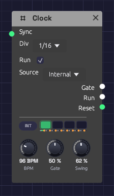
The Gate jack lights with every pulse.The Clock is the patch's metronome. It sends a steady stream of gate pulses at a tempo you set, for stepping a Sequencer, firing envelopes on the beat, or triggering a Sample & Hold.
It also sets the patch tempo. Tempo-synced modules, such as the Delay with its Sync set to a note length, follow the Clock's BPM, and keep following it as you turn the knob.
Inputs
| Port | Signal Type | Description |
|---|---|---|
| Sync | Gate (Green) | A rising edge restarts the beat, so the next pulse starts right away |
Outputs
| Port | Signal Type | Description |
|---|---|---|
| Gate | Gate (Green) | One pulse per division. The jack lights while the gate is high |
Parameters
| Control | Range | Default | Description |
|---|---|---|---|
| BPM | 20 – 300 BPM | 120 | Tempo in beats (quarter notes) per minute |
| Gate | 1 – 99% | 50% | How much of each pulse the gate stays high |
| Div | 1, 1/2, 1/4, 1/8, 1/16 | 1/4 | Dropdown on the node. Pulse rate relative to the beat |
| Run | On / Off | On | Checkbox on the node. Off holds the gate low and pauses the clock |
Divisions
BPM counts quarter notes, and Div sets how many pulses that makes:
| Div | One pulse every | At 120 BPM |
|---|---|---|
| 1 | 4 beats (a bar of 4/4) | 2 s |
| 1/2 | 2 beats | 1 s |
| 1/4 | Beat | 500 ms |
| 1/8 | Half beat | 250 ms |
| 1/16 | Quarter beat | 125 ms |
A Clock has one output, so for two rhythms at once, use two Clocks at the same BPM, each with its own division.
Gate length
Gate sets how long each pulse stays high, as a share of the time between pulses. At 50% the gate is high for half of each pulse. Short gates (5 to 20%) suit drums and plucks: the envelope gets its attack and goes straight to release. Long gates (80 to 99%) hold an envelope in its sustain, so notes run nearly into one another.
Sync and Run
A rising edge at Sync restarts the beat from the top. Use it to line the Clock up with another Clock, a sequencer's EOC, or any trigger. The Clock keeps its own tempo; Sync only moves where the beat falls.
Unticking Run holds the gate low and freezes the clock where it is. Ticking it again carries on from the same point in the beat.
The patch tempo
The Clock's BPM is the tempo for the whole patch. A Delay set to sync to 1/8 echoes on the eighth note of whatever the Clock is playing, and if you change the BPM the echoes move with it. Without a Clock in the patch, synced modules assume 120 BPM.
If a patch has more than one Clock, synced modules follow just one of them, so give them all the same BPM.
Patch examples
Stepping a sequencer
[Clock Gate] ──> [Sequencer Clock]
[Sequencer Pitch] ──> [Oscillator V/Oct]
[Sequencer Gate] ──> [ADSR Gate]
Set Div to 1/8 or 1/16 for a running bassline.
Notes on the beat
[Clock Gate] ──> [ADSR Gate]
[ADSR Out] ──> [VCA CV]
[Oscillator Out] ──> [VCA In] ──> [Audio Output]
A drone that sounds once per pulse. Lower the BPM to 40 to 60 and lengthen the envelope's release for slow, ambient swells.
Restarting an LFO on the beat
[Clock Gate] ──> [LFO Sync]
With Div at 1 and the LFO at a matching rate, every bar starts the LFO's sweep from the top.
Echoes in time
[Clock] (BPM 100)
[Synth voice] ──> [Delay In L] (Delay Sync: 1/8D)
The Delay needs no cable from the Clock to follow its tempo.
Notes
- The Clock is monophonic. It sends the same gate to every voice of a polyphonic module.
- The Clock runs with the transport. Stop halts it with the rest of the patch, and Play starts it again from the top of the beat.
Related modules
- Sequencer, the Clock's most common partner
- ADSR Envelope to turn pulses into notes
- LFO to restart modulation on the beat
- Delay, which follows the Clock's tempo when synced
VCA
Module ID util.vca · Category Utility
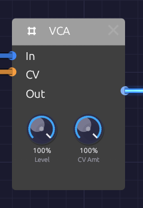
Level sets the ceiling; whatever arrives at CV opens the gate up to it.A VCA (voltage-controlled amplifier) sets how loud a signal is, moment to moment, from a control signal. Patch an envelope into CV and a droning oscillator becomes a note that starts when you press a key and fades when you let go. Patch an LFO in instead and you have tremolo.
The VCA doesn't care what it's amplifying. Run an LFO through it instead of audio and the CV now sets how much modulation gets through, which is how you make vibrato that fades in or a filter wobble that follows an envelope.
The VCA is polyphonic. Patch a polyphonic voice through it and every voice gets its own gain, set by its own channel of the CV cable.
Inputs
| Port | Signal Type | Description |
|---|---|---|
| In | Audio (Blue) | The signal to shape |
| CV | Control (Orange) | Gain, from 0 to 1. Values outside that range are clamped. With nothing patched, CV sits at 1 (fully open) |
Outputs
| Port | Signal Type | Description |
|---|---|---|
| Out | Audio (Blue) | The input, scaled by Level and CV |
Parameters
| Knob | Range | Default | Description |
|---|---|---|---|
| Level | 0 – 100% | 100% | Overall output level |
| CV Amt (CV Amount) | 0 – 100% | 100% | How much CV controls the level. At 0% the CV is ignored |
How it works
The VCA multiplies the input by a gain:
gain = Level × (1 - CV Amount + CV × CV Amount)
Out = In × gain
With CV Amt at 100% (the default), the gain is Level times the CV: silent at CV 0, full Level at CV 1. Lower CV Amt and the VCA never closes completely. At 50%, a CV of 0 leaves the signal at half Level, so the envelope or LFO only takes away half the volume. That's a quick way to get a gentle tremolo, or a note that dips rather than stops.
The response is linear: a CV of 0.5 gives half the amplitude. Envelopes with curved stages (see ADSR Envelope) give the fade its shape.
Both knobs are smoothed, so turning them while a note plays doesn't click.
Bipolar signals into CV
CV is clamped to 0–1, so the negative half of a bipolar signal shuts the VCA. A bipolar LFO into CV gives a tremolo that's silent half the time. For an even tremolo, switch the LFO's Bipolar off so it swings from 0 to 1.
For the same reason, an audio-rate oscillator into CV doesn't give true ring modulation. The VCA passes the top half of the modulator's wave and blocks the bottom half: a rougher amplitude modulation with the carrier still audible.
Patches
Envelope-shaped note
The VCA's main job. The envelope opens it on each key press and closes it on release:
[Keyboard Pitch] ──> [Oscillator V/Oct]
[Keyboard Gate] ──> [ADSR Gate]
[Oscillator Out] ──> [VCA In]
[ADSR Out] ──> [VCA CV]
[VCA Out] ──> [Audio Output Mono]
Without the VCA, the oscillator drones forever.
Tremolo
[LFO Out] ──> [VCA CV] (LFO Bipolar off, Rate 4–8 Hz)
[Oscillator Out] ──> [VCA In] ──> [Audio Output Mono]
Turn CV Amt down to make the tremolo shallower.
Modulation that follows a note
Put an LFO through the VCA and let an envelope set how much of it reaches the filter. The wobble swells as the note develops:
[LFO Out] ──> [VCA In]
[ADSR Out] ──> [VCA CV] (slow Attack)
[VCA Out] ──> [SVF Filter Cutoff]
A polyphonic voice
With Poly MIDI feeding a polyphonic oscillator and envelope, one VCA handles every voice. Each voice's envelope opens its own channel:
[Poly MIDI Gate] ──> [ADSR Gate]
[Oscillator Out] ──> [VCA In]
[ADSR Out] ──> [VCA CV]
[VCA Out] ──> [Audio Output Mono]
Voices add up at the output, so a four-note chord is about four times as loud as one note. Pull Level down to leave headroom. A mono cable into CV (a single LFO, say) is shared by every voice.
Placement
The VCA usually sits after the filter and before the effects:
[Oscillator] ──> [Filter] ──> [VCA] ──> [Delay] ──> [Reverb] ──> [Audio Output]
That way the delay and reverb hear each note's release and carry its tail on after the VCA has closed.
Related modules
- ADSR Envelope: the usual CV source
- LFO: tremolo and modulation depth
- Attenuverter: scale or invert a CV before it reaches the VCA
- Mixer: combine several VCA outputs
Attenuverter
Module ID util.attenuverter · Category Utility
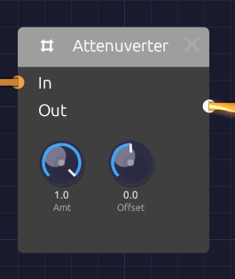
Amount scales and flips the input; Offset slides the result up or down.An attenuverter turns a signal down, turns it upside down, or both. The name joins attenuate and invert. It also has an Offset knob that adds a fixed value afterwards. Between them, the two knobs adapt one module's output to what another module's input expects. Use it to tame an LFO that swings too wide, to make an envelope close a filter instead of opening it, or to turn a 0–1 signal into a -1–1 one.
With nothing patched into In, the output is just the Offset: a steady, hand-set control value you can patch anywhere.
The Attenuverter is polyphonic. Each channel of a polyphonic cable is scaled on its own, with the same knob settings.
Inputs
| Port | Signal Type | Description |
|---|---|---|
| In | Control (Orange) | The signal to scale, invert or shift. Audio patches in too |
Outputs
| Port | Signal Type | Description |
|---|---|---|
| Out | Control (Orange) | In × Amount + Offset, kept within -1 to +1 |
Parameters
| Knob | Range | Default | Description |
|---|---|---|---|
| Amt (Amount) | -1 to +1 | +1 | Scales the input. Negative values flip it upside down |
| Offset | -1 to +1 | 0 | A constant added after scaling |
How it works
Out = In × Amount + Offset (limited to -1 … +1)
| Amount | Effect |
|---|---|
| +1 | The input passes unchanged (the default) |
| +0.5 | Half as strong |
| 0 | The input is gone; only Offset remains |
| -0.5 | Half as strong, upside down |
| -1 | Full strength, upside down |
The output never goes past ±1. The Attenuverter can make a signal smaller or flip it, but it can't make it bigger. A sum that would exceed ±1 flattens at the limit, so if a large Offset clips the peaks of your signal, turn Amount down to make room.
Both knobs are smoothed, so turning them doesn't step or click.
Patches
Reduce modulation depth
An LFO at full strength is too much for vibrato. Turn it down before it reaches the oscillator:
[LFO Out] ──> [Attenuverter In] ──> [Oscillator Exp FM]
(Amt 0.2)
Invert an envelope
A negative Amount turns the envelope upside down, so the filter closes as the note starts and opens again as it releases:
[ADSR Out] ──> [Attenuverter In] ──> [SVF Filter Cutoff]
(Amt -1)
The SVF's Cutoff input moves the cutoff in octaves around its knob, so set the Cutoff knob high and let the inverted envelope pull it down.
Unipolar to bipolar
An envelope runs from 0 to 1. With Amount 1 and Offset -0.5, it runs from -0.5 to +0.5, centered on zero. (A full -1 to +1 swing would need a gain of 2, which the Attenuverter can't give.)
[ADSR Out] ──> [Attenuverter In] (Amt 1, Offset -0.5)
Bipolar to unipolar
A bipolar LFO swings from -1 to +1. Halve it and lift it by half to get 0 to 1:
[LFO Out] ──> [Attenuverter In] (Amt 0.5, Offset 0.5)
The LFO's own Bipolar switch does the same thing; this is for sources without one.
A fixed control value
Leave In empty and use Offset as a knob you can patch. One Attenuverter can hold several destinations at the same value:
[Attenuverter Out] ──> [SVF Filter Resonance]
──> [Ladder Filter Resonance]
Velocity to brightness, per voice
In a polyphonic patch, scale each voice's velocity before it moves the filter, so harder notes are brighter without the filter jumping a full octave:
[Poly MIDI Velocity] ──> [Attenuverter In] ──> [SVF Filter Cutoff]
(Amt 0.5)
Related modules
- VCA: scale a signal by another signal instead of by a knob
- Mixer: add two signals together
- LFO and ADSR Envelope: the signals you'll most often scale
Mixer
Module ID util.mixer · Category Utility
 Two channels, two levels, one sum.
Two channels, two levels, one sum.
The Mixer adds two signals together, each at its own level. Use it to layer two oscillators, blend a dry signal with an effect, or combine two modulation sources into one CV.
It works on any signal that isn't MIDI. Audio and control signals both patch straight in, so the same module mixes sound or modulation.
Inputs
| Port | Signal Type | Description |
|---|---|---|
| Ch 1 | Audio (Blue) | First signal to mix |
| Ch 2 | Audio (Blue) | Second signal to mix |
Outputs
| Port | Signal Type | Description |
|---|---|---|
| Out | Audio (Blue) | Both channels, each at its level, added together |
Parameters
| Knob | Range | Default | Description |
|---|---|---|---|
| Lv 1 (Level 1) | 0 – 100% | 100% | Level of channel 1 |
| Lv 2 (Level 2) | 0 – 100% | 100% | Level of channel 2 |
Both levels are smoothed, so you can ride them while the patch plays without clicks.
How it works
Out = Ch 1 × Level 1 + Ch 2 × Level 2
At the default levels, two full-scale signals add up to twice full scale. Anything past ±1 is clipped hard, so when you mix two loud sources, bring the levels down to around 50–70% each.
Polyphonic cables
The Mixer isn't polyphonic: it mixes down. A polyphonic cable into Ch 1 or Ch 2 is summed to one channel, so a whole polyphonic voice goes straight in. Each note adds to the total, so leave more headroom the more voices you play.
Patches
Two oscillators
Two oscillators a few cents apart beat slowly against each other and sound thicker than either alone:
[Keyboard Pitch] ──> [Oscillator 1 V/Oct]
[Keyboard Pitch] ──> [Oscillator 2 V/Oct] (Fine +7 cents)
[Oscillator 1 Out] ──> [Mixer Ch 1]
[Oscillator 2 Out] ──> [Mixer Ch 2]
[Mixer Out] ──> [SVF Filter In]
Set the second oscillator's Oct to +1 and its level to about 50% to add brightness without losing the fundamental. For a thick stack from one module, try the Oscillator's own Voices and Sub instead (see Oscillator).
Two modulation sources
A slow LFO and an envelope together: the filter follows each note and drifts as well.
[LFO Out] ──> [Mixer Ch 1] (Lv 1 around 30%)
[ADSR Out] ──> [Mixer Ch 2]
[Mixer Out] ──> [SVF Filter Cutoff]
Wet and dry
Most effects have their own Mix knob, but the Mixer keeps the dry and wet signals on separate channels, so you can set their balance by hand or process one without the other:
[VCA Out] ──> [Mixer Ch 1] (dry)
[VCA Out] ──> [Reverb In L]
[Reverb Out L] ──> [Mixer Ch 2] (wet, Reverb Mix at 100%)
[Mixer Out] ──> [Audio Output Mono]
More than two channels
Chain Mixers: the output of one feeds a channel of the next.
[Oscillator 1 Out] ──> [Mixer A Ch 1]
[Oscillator 2 Out] ──> [Mixer A Ch 2]
[Mixer A Out] ──> [Mixer B Ch 1]
[Oscillator 3 Out] ──> [Mixer B Ch 2]
[Mixer B Out] ──> [Audio Output Mono]
Related modules
- VCA: level control from a CV
- Attenuverter: scale, invert or offset a signal before mixing
- Audio Output: the final mix, with metering and a limiter
Sample & Hold
Module ID util.sample_hold · Category Utility
 Each trigger freezes the input; the output holds until the next one.
Each trigger freezes the input; the output holds until the next one.
Sample & Hold takes a snapshot of its input each time a trigger arrives, and holds that value steady until the next trigger. A smooth, continuous signal goes in; a staircase of held steps comes out, one step per trigger.
That staircase is the sound of classic analog randomness: a filter that jumps to a new brightness on every beat, or a melody that wanders. The Slew knob softens the steps into glides.
Sample & Hold is polyphonic. Patch polyphonic cables in and each voice samples and holds its own channel. A mono trigger is shared by every voice, so all of them step together.
Inputs
| Port | Signal Type | Description |
|---|---|---|
| In | Control (Orange) | The signal to sample. Audio patches in too |
| Trig | Gate (Green) | Each rising edge (crossing 0.5 on the way up) captures the input. Takes gate cables only |
Outputs
| Port | Signal Type | Description |
|---|---|---|
| Out | Control (Orange) | The held value, steady until the next trigger |
Parameters
| Knob | Range | Default | Description |
|---|---|---|---|
| Slew | 0 – 1 s | 0 s | Glide time to each new value. At 0 the output jumps |
How it works
In: ~~~~~/\/\~~~~~/\~~~~ (moving signal)
Trig: _|‾|____|‾|____|‾|__ (rising edges)
Out: __‾‾‾‾‾‾____‾‾‾‾‾‾‾‾ (one held value per edge)
Only the rising edge counts: how long the trigger stays high makes no difference. With nothing patched into In the module holds 0.
Slew
With Slew above zero, the output glides to each new value at a steady rate instead of jumping. The knob is the time a change of 1.0 takes, so a 0.2 s Slew moves from 0 to 1 in 0.2 s and from 0 to 0.5 in 0.1 s. Small steps arrive sooner than large ones, the way a portamento circuit behaves.
Short slews (a few tens of milliseconds) take the click off stepped modulation while keeping its rhythm. Long ones turn the staircase into a slow, wandering curve.
Patches
Stepped random modulation
Modular Synth has no noise module, but a fast oscillator sampled by a slower clock does the job. Tune the oscillator to a frequency with no simple relation to the clock and every sample lands at an unrelated point in its cycle:
[Oscillator Out] ──> [Sample & Hold In] (Saw, Oct +2, Fine a few cents off)
[Clock Gate] ──> [Sample & Hold Trig]
[Sample & Hold Out] ──> [SVF Filter Cutoff]
The filter jumps to a new brightness on every clock. Add a little Slew to smooth the jumps.
Stepped LFO
Sample a slow LFO with a faster clock and it climbs and falls in steps:
[LFO Out] ──> [Sample & Hold In] (LFO Rate 0.2 Hz)
[Clock Gate] ──> [Sample & Hold Trig] (Clock Div 1/16)
[Sample & Hold Out] ──> [Oscillator V/Oct]
Into V/Oct, this gives a gliding arpeggio of unquantized pitches. Run it through an Attenuverter first to narrow the range.
Hold a value per note
Trigger from a keyboard gate and each note gets a fresh value that stays put while the key is held:
[LFO Out] ──> [Sample & Hold In]
[Keyboard Gate] ──> [Sample & Hold Trig]
[Sample & Hold Out] ──> [SVF Filter Cutoff]
Every note sounds a little different, like a player who never strikes the same way twice. In a polyphonic patch, feed Trig from Poly MIDI's Gate and each voice holds its own value.
Gliding steps
Raise Slew to 0.1–0.3 s on any of the patches above and the steps become smooth curves that still move in time with the clock.
Related modules
- Clock: steady triggers
- LFO: a slow signal to sample
- Attenuverter: scale the held values to a useful range
- Step Sequencer: stepped values you choose yourself
Oscilloscope
Module ID util.oscilloscope · Category Utility
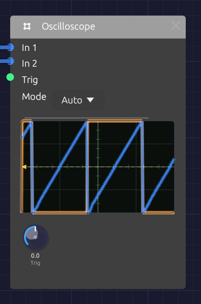
Two traces, blue and orange, locked to the trigger level marked on the left edge.The Oscilloscope draws the shape of a signal as it plays. Patch an oscillator into it and you see its waveform; patch in the same oscillator after a filter and you see the filter rounding off its corners. It's the quickest way to check what a module is doing, and a good way to learn what a sound looks like.
It has two inputs, drawn as two overlaid traces, so you can compare a signal before and after a module. It passes nothing on: the scope only watches.
Inputs
| Port | Signal Type | Description |
|---|---|---|
| In 1 | Audio (Blue) | The first trace, drawn in blue. Its signal also starts each sweep |
| In 2 | Audio (Blue) | The second trace, drawn in orange |
| Trig | Gate (Green) | External trigger. A rising edge starts a sweep |
Control signals patch into In 1 and In 2 as well. A polyphonic cable is summed into one trace.
Parameters
| Control | Range | Default | Description |
|---|---|---|---|
| Mode | Auto / Normal / Single / Free | Auto | How sweeps start (see below) |
| Trig (Trigger Level) | -1 to +1 | 0 | The level In 1 must rise through to start a sweep |
Reading the display
The screen spans -1 to +1 from bottom to top, the full range of an audio signal, with the center line at zero. A 4 × 4 grid helps you judge levels: each horizontal division is 0.5.
Each sweep shows 512 samples: about 11.6 ms at 44.1 kHz, or 10.7 ms at 48 kHz. That's a few cycles of a note in the middle of the keyboard: one cycle of C4 lasts 3.8 ms. The time scale is fixed.
The trigger point sits a quarter of the way across, so you see a little of what came just before each trigger. A small arrow and a dashed line on the left edge mark the trigger level.
Triggering
Without triggering, each sweep would start at a random point in the wave and the picture would jitter. Triggering starts every sweep at the same point (where In 1 rises through the trigger level), so a steady waveform stands still on the screen.
A rising edge at Trig starts a sweep too. Both work at once: whichever comes first starts the sweep.
| Mode | Behavior |
|---|---|
| Auto | Sweeps on each trigger. If none arrives within about 50 ms, it sweeps anyway, so you always see something, even a flat line |
| Normal | Sweeps only on a trigger. With no trigger, the last picture stays on screen |
| Single | Captures one sweep on the next trigger and then holds it. Use it to freeze a transient, such as the attack of a note |
| Free | Ignores triggers and sweeps continuously. The picture scrolls unless the signal happens to line up |
In Single mode the held picture stays until the scope's state is reset, for example by stopping and restarting the transport.
If the picture won't stand still in Auto or Normal, the trigger level is probably outside the signal's range. A quiet signal that never rises through 0.5 never triggers at that level. Bring Trig back toward 0.
What it's good for
The scope is built for audio-rate signals, where a few milliseconds show whole cycles.
- Waveforms. Compare the Oscillator's four waves, watch pulse width change the square, or see unison voices drift in and out of phase.
- Filters. Put the raw oscillator on In 1 and the filter's output on In 2. Watch the corners round off as the cutoff falls, and resonance ring at the cutoff frequency.
- Distortion and saturation. See the Ladder filter's Drive or the Distortion module flatten and fold a sine.
- Levels. A trace that runs flat along the top or bottom edge is at full scale, and may be clipping.
Slow signals (LFOs, envelopes, sequences) take far longer than one sweep, so here they show as a near-flat line moving up and down. To see their shape, watch their cables instead: control cables draw their signal as it travels. See Reading the signal in a cable.
Patches
Before and after
[Oscillator Out] ──> [SVF Filter In]
[Oscillator Out] ──> [Oscilloscope In 1]
[SVF Filter LowPass] ──> [Oscilloscope In 2]
Sweep the filter's Cutoff and watch the orange trace smooth out while the blue one stays sharp.
Hard sync
With In 1 on the master oscillator, the picture locks to its pitch, and In 2 shows the synced oscillator restarting its cycle in time:
[Oscillator 2 Out] ──> [Oscillator 1 Sync]
[Oscillator 2 Out] ──> [Oscilloscope In 1]
[Oscillator 1 Out] ──> [Oscilloscope In 2]
Catch a note's attack
Set Mode to Single, patch the VCA's output into In 1, and set Trig a little above zero, such as 0.1. Play a note and the scope freezes its first few milliseconds.
Related modules
- Oscillator: the first thing to look at
- SVF Filter and Ladder Filter: see what filtering does to a waveform
- Audio Output: its meter shows levels at the end of the chain
Step Sequencer
Module ID seq.step · Category Utility
 Green steps play, dark steps rest; the outlined step is the one sounding now.
Green steps play, dark steps rest; the outlined step is the one sounding now.
The Step Sequencer plays a repeating pattern of up to 16 notes. Each clock pulse moves it one step along, and each step sends out its own pitch, a gate if the step is switched on, and a velocity. Patch Pitch into an oscillator and Gate into an envelope, and a Clock turns it into a bass line, an arpeggio or a riff.
The pattern lives on the node itself: a grid of step buttons with each step's note name underneath.
Inputs
| Port | Signal Type | Description |
|---|---|---|
| Clock | Gate (Green) | Each rising edge advances one step |
| Reset | Gate (Green) | A rising edge jumps back to step 1 |
| Run | Gate (Green) | Steps advance only while this is high. With nothing patched, the sequencer runs |
Outputs
| Port | Signal Type | Description |
|---|---|---|
| Pitch | Control (Orange) | The current step's note as V/Oct. Middle C (C4) is 0.0, the same as the Keyboard and MIDI modules |
| Gate | Gate (Green) | A pulse on each clock when the current step is switched on |
| Velocity | Control (Orange) | The current step's velocity, 0 to 1 |
| Step | Control (Orange) | The current position as a ramp: 0 on the first step, 1 on the last |
| EOC | Gate (Green) | End of cycle: a 1 ms pulse each time the pattern comes round |
Parameters
| Control | Range | Default | Description |
|---|---|---|---|
| Steps | 1 – 16 | 8 | How many steps play before the pattern loops |
| Gate (Gate Length) | 1 – 99% | 50% | How long each gate stays high, as a percentage of 100 ms |
| Dir (Direction) | Fwd / Bwd / P-P / Rnd | Fwd | Playback order |
Each of the 16 steps also stores a note (default C4), a gate on/off (default on) and a velocity (default 100 of 127). Patches save all of them.
Programming a pattern
The grid shows one button per active step, in rows of eight. Steps beyond Steps are hidden, not lost: turn Steps back up and they return as you left them.
- Click a step to switch its gate on (green) or off (dark). An off step is a rest: Pitch still moves to its note, but no gate fires.
- Right-click a step to change its note: Pitch +12 (Octave Up), Pitch +1 (Semitone Up), Pitch -1 (Semitone Down) or Pitch -12 (Octave Down). The note name under the step updates as you go.
While the patch plays, the current step is drawn brighter, with a white outline.
Velocities can't be edited on the node yet. Every step plays at 100 unless the patch file says otherwise. If you do set them there, patch Velocity into an envelope's Velocity input for accents.
Timing
Clock and gate length
The sequencer has no tempo of its own. It moves on each rising edge at Clock, so the clock you patch in sets the speed, and its swing or irregularity carries through.
Gate sets the length of each note as a share of a fixed 100 ms, not of the step. At 50% each gate lasts 50 ms; at 99%, 99 ms. Fast patterns (sixteenths at 120 BPM are 125 ms apart) stay detached at every setting, which suits plucks and basses. For longer notes, give the envelope a longer Decay and higher Sustain, or a longer Release.
Reset and the first step
The pattern advances before it plays, so each clock moves to the next step and then sounds it. After a Reset, the sequencer sits on step 1 and the next clock plays step 2. If you want step 1 on the downbeat, send the reset just after the last step of the bar instead of on the downbeat, or treat step 2 as the start of the phrase.
Directions
| Dir | Order (with 4 steps) | EOC |
|---|---|---|
| Fwd | 1 2 3 4 1 2 3 4 … | After step 4 |
| Bwd | 4 3 2 1 4 3 2 1 … | After step 1 |
| P-P (ping-pong) | 1 2 3 4 3 2 1 2 … | At each end |
| Rnd | A random step on each clock | Never |
Ping-pong doesn't repeat the end steps, so a four-step pattern bounces over six clocks.
Patches
A sequenced voice
[Clock Gate] ──> [Step Sequencer Clock]
[Step Sequencer Pitch] ──> [Oscillator V/Oct]
[Step Sequencer Gate] ──> [ADSR Gate]
[Oscillator Out] ──> [SVF Filter In]
[SVF Filter LowPass] ──> [VCA In]
[ADSR Out] ──> [VCA CV]
[VCA Out] ──> [Audio Output Mono]
Set the Clock's Div to 1/8 or 1/16, switch a few steps off to make rests, and use the Oscillator's Oct knob to move the whole pattern up or down.
Modulation sequences
Pitch is a control signal like any other. Patch it into a filter's Cutoff and each step sets a brightness instead of a note: one octave of cutoff for each octave of pitch. Combine with a second sequencer for melody, both clocked together.
Patterns of different lengths
Two sequencers on the same clock with different Steps settings drift against each other and line up again only every few bars. Eight steps against five repeats every 40 clocks.
[Clock Gate] ──> [Step Sequencer A Clock] (Steps 8)
[Clock Gate] ──> [Step Sequencer B Clock] (Steps 5)
Stop and start
Patch a gate into Run to pause the pattern in place. While Run is low, clocks are ignored and the sequencer stays on its current step.
Related modules
- Clock: drives the sequencer
- ADSR Envelope: shapes each step's note from the Gate output
- Oscillator: plays the Pitch output
- Sample & Hold: stepped values that aren't programmed by hand
MIDI Monitor
Module ID util.midi_monitor · Category Utility
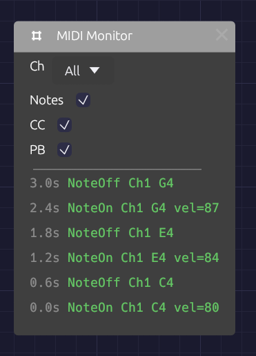
The newest event is at the top, colored by kind.The MIDI Monitor shows the MIDI arriving from your device as it happens. Use it when you connect new gear, when a note won't play, or to find out which CC number a knob on your controller sends before you map it.
It has no ports and makes no sound. It listens to the same device as every other MIDI module (the one chosen in MIDI In on the toolbar; see Choosing a MIDI device), so you can drop it anywhere in a patch without patching anything.
Controls
| Control | Options | Default | Description |
|---|---|---|---|
| Ch (Channel) | All / 1 – 16 | All | Shows only events on this MIDI channel |
| Notes | On / Off | On | Shows Note On and Note Off |
| CC | On / Off | On | Shows control changes: knobs, faders, pedals |
| PB (Pitch Bend) | On / Off | On | Shows pitch bend wheel movements |
Reading the log
The log shows the most recent events, newest at the top. Each line starts with the time it arrived, in seconds since the first event the app received, then the event itself:
| Event | Example | Color |
|---|---|---|
| Note On | NoteOn Ch1 C4 vel=100 | Green |
| Note Off | NoteOff Ch1 C4 | Green |
| Control change | CC Ch1 #1 val=64 | Orange |
| Pitch bend | PitchBend Ch1 2048 | Purple |
| Channel pressure | Pressure Ch1 45 | Gray |
| Polyphonic pressure | PolyPres Ch1 C4 45 | Gray |
| Program change | Program Ch1 #5 | Gray |
Note names put middle C (MIDI note 60) at C4. Pitch bend runs from −8192 to 8191, with 0 at the center. Pressure and program change can't be filtered out.
The log holds the last few events and applies the filters to those, so turning a filter on hides lines rather than reaching further back. Notes played on the computer keyboard into a Poly MIDI module show up here too, on channel 1.
Uses
Is anything arriving? Play a note. If the log still says No MIDI events, the problem is upstream: check that the device is selected and connected in MIDI In, and that the controller is sending.
Which channel? Play each device in turn and read the channel off the log. Then set Ch on your MIDI Note or Poly MIDI modules to match, or leave them on Omni.
Which CC? Move a knob on your controller and read its number after the #. You don't need the number for MIDI Learn, which listens for you, but it helps when a controller sends more than you expect.
A stuck note? Look for a Note On without a matching Note Off. If the Note Off never arrives, the controller or its connection dropped it.
Is velocity working? Play softly, then hard, and watch vel=. A controller that always sends the same number has fixed velocity switched on in its own settings.
Related modules
Audio Output
Module ID output.audio · Category Output
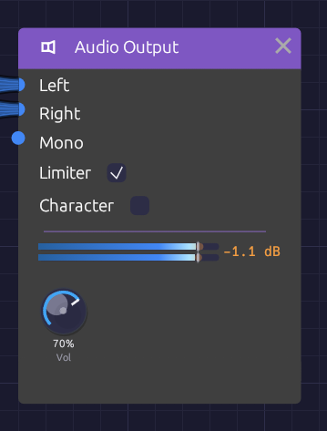
The meter shows what reaches your speakers, and in orange, what the limiter caught.Audio Output is where a patch meets your speakers. Whatever arrives at its inputs goes through a short mastering chain (DC blocking, volume, optional saturation and a peak limiter) and on to your audio device.
Every patch that makes sound needs one. If a patch has more than one Audio Output, only one of them is heard, so route everything to a single output.
Inputs
| Port | Signal Type | Description |
|---|---|---|
| Left | Audio (Blue) | Left speaker |
| Right | Audio (Blue) | Right speaker |
| Mono | Audio (Blue) | Sent equally to both speakers. The easiest way to hear a patch |
The module has no outputs.
Parameters
| Control | Range | Default | Description |
|---|---|---|---|
| Vol (Volume) | 0 – 100% | 80% | Master volume |
| Limiter | On / Off | On | Catches peaks before they can clip |
| Character | On / Off | Off | Gentle soft-clip saturation, for color |
Routing
Mono is added to both channels, on top of anything patched into Left and Right. Left and Right stay separate: a cable into Left alone plays only in the left speaker. For a mono source, use Mono. For stereo, patch a module's left and right outputs (an Oscillator's Out L and Out R, or any effect's Out L and Out R) into Left and Right.
The inputs are audio inputs, so a polyphonic cable is summed to one channel on the way in. A whole polyphonic voice can go straight to the output.
The output stage
The signal passes through these stages, in order:
- Mix. Left and Right, with Mono added to both. Any sample that isn't a valid number (NaN or infinity) is replaced by silence, so a misbehaving module can never send a burst of noise to your speakers.
- DC blocker. A 5 Hz high-pass removes any constant offset, such as a stray control signal or the lopsided output of an asymmetric distortion. It is far below anything you can hear.
- Volume.
- Character (when on). A soft clipper that leaves everything below about -3 dBFS untouched and rounds off peaks above it, never going past full scale. It adds a little warmth and density to loud material and none at all to quiet passages.
- Limiter (when on). A stereo-linked, look-ahead peak limiter with a ceiling of -0.3 dBFS. It sees each peak 1 ms before it arrives and turns the gain down just in time, so peaks are caught rather than clipped. It lets go quickly after a single transient and more slowly when it's working continuously, so it neither ducks audibly nor pumps. Linking the channels keeps the stereo image from shifting. The output never goes over the ceiling.
The limiter's look-ahead delays the output by 1 ms. The delay stays in place when the limiter is off, so switching it doesn't shift the timing.
The meter
The node shows a stereo peak meter, one bar per channel, scaled from -48 to +6 dBFS.
- The bar is the level you hear, after the limiter. It runs blue through the body of the signal and warms to amber near full scale.
- A faint orange extension beyond the bar appears while the limiter is working. It reaches as far as the patch drove into it: the longer the extension, the harder the limiter is working.
- A thin tick marks the ceiling: -0.3 dBFS with the limiter on, 0 dBFS with it off.
- A peak-hold mark stays at the highest recent level for a moment and then falls.
- The readout to the right shows the limiter's gain reduction, such as -2.4 dB. It reads off when the limiter is switched off.
With the limiter off, anything over 0 dBFS shows in red. Those peaks will clip your audio device.
Hover the meter for exact levels: what's going out, what's going into the limiter, and how much it's reducing.
Setting levels
The limiter is a safety net, not a volume knob. A few decibels of reduction on the loudest peaks is inaudible. Constant reduction of 6 dB or more squashes the patch and dulls its transients. If the orange extension is always showing, turn something down earlier in the chain (the VCA's Level, the Mixer's levels, or an effect's output) rather than leaning on the limiter.
Remember that voices add up. A four-note polyphonic chord is about four times as loud as one note.
Turn Limiter off when you want to hear exactly what the patch produces, for example while checking how an effect behaves at full scale. Keep Vol low while you do.
Patches
Mono
[VCA Out] ──> [Audio Output Mono]
Stereo, through effects
[VCA Out] ──> [Delay In L]
[Delay Out L] ──> [Reverb In L]
[Delay Out R] ──> [Reverb In R]
[Reverb Out L] ──> [Audio Output Left]
[Reverb Out R] ──> [Audio Output Right]
The Delay plays a mono input on both sides when In R is empty, so a mono voice becomes stereo at the first effect.
Supersaw
[Oscillator Out L] ──> [Audio Output Left]
[Oscillator Out R] ──> [Audio Output Right]
With Voices above 1, the Oscillator spreads its unison voices across the two outputs.
Troubleshooting
No sound. Press Play in the toolbar. Check that something is patched into the output, that Vol is up, and that the meter moves. If the meter moves but you hear nothing, check your audio device and system volume.
Sound in one speaker only. A cable into Left or Right plays on that side alone. Move it to Mono, or patch the other side too.
Distortion. If the limiter's readout shows large, constant reduction, the patch is too hot. Bring levels down before the output. If Character is on, the soft clipper also colors peaks above -3 dBFS.
Related modules
- Mixer: combine sources before the output
- VCA: shape and set the level of each voice
- Reverb and Delay: stereo effects that usually come last
Basic Subtractive Synth
A saw wave through a lowpass filter, with one envelope shaping its brightness and another its volume. Every note opens bright and settles darker as you hold it. This is the architecture behind most classic monosynths, and the patch to learn first: once you understand it, most other patches are variations on it.
Load it: choose 📚 Examples → Basic Subtractive in the toolbar. Press ▶ Play, then play the Z to M keys. The patch file is
patches/basic-subtractive.json.
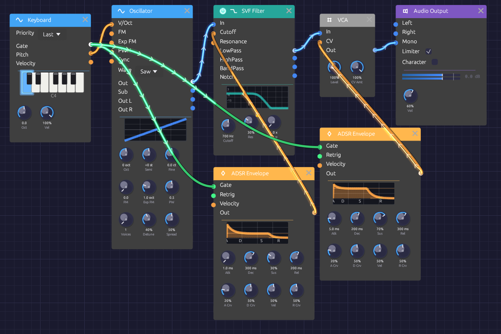
Two envelopes from one gate: one for the filter, one for the VCA.What it teaches
- Subtractive synthesis. Start with a waveform rich in harmonics and take some away with a filter.
- Separate envelopes for tone and volume. Brightness and loudness can move on different schedules.
- Filter CV in octaves. The envelope opens the filter by a musical interval, not a number of hertz.
Modules
| Module | Settings |
|---|---|
| Keyboard | Defaults |
| Oscillator | Wave Saw |
| SVF Filter | Cutoff 700 Hz, Res 30% |
| ADSR Envelope (filter) | Atk 1 ms, Dec 300 ms, Sus 30%, Rel 200 ms |
| ADSR Envelope (amp) | Atk 5 ms, Dec 200 ms, Sus 70%, Rel 300 ms |
| VCA | Defaults |
| Audio Output | Vol 60% |
How it's built
The audio path
[Keyboard Pitch] ──> [Oscillator V/Oct]
[Oscillator Out] ──> [SVF Filter In]
[SVF Filter LowPass] ──> [VCA In]
[VCA Out] ──> [Audio Output Mono]
The saw wave contains every harmonic, so it's the richest raw material for a filter. The SVF's lowpass output keeps what's below the cutoff. At 700 Hz with a little resonance, the tone is warm, with a slight edge at the cutoff.
Two envelopes from one gate
[Keyboard Gate] ──> [ADSR (filter) Gate]
──> [ADSR (amp) Gate]
[ADSR (filter) Out] ──> [SVF Filter Cutoff]
[ADSR (amp) Out] ──> [VCA CV]
One output can feed any number of inputs, so the Keyboard's gate starts both envelopes at once.
The amp envelope shapes the volume through the VCA. It rises in 5 ms, which is quick but not a click, falls to 70% over 200 ms, and fades out over 300 ms after you let go.
The filter envelope shapes the brightness. The SVF's Cutoff input works in octaves: +1 doubles the cutoff. So as the envelope jumps to its peak of 1.0, the filter opens one octave above the knob, to 1.4 kHz. Over the next 300 ms it settles to its 30% sustain, about 860 Hz. That fall in brightness, faster than the fall in volume, is what makes each note sound plucked rather than switched on.
Variations
Fatter bass. Replace the SVF with a Ladder Filter and use its LP24 output. Turn Oct on the Keyboard down to −1, set the Ladder's Drive to about 2x, and lower its Cutoff to 300 Hz.
Acid squelch. Raise Res to 70% and lower Cutoff to 400 Hz. The filter envelope now sweeps a sharp resonant peak across each note.
Pluck. Set the amp envelope's Sus to 0% and Dec to 400 ms, so every note dies away even while held.
Supersaw. On the Oscillator, set Voices to 7 and Detune to about 40%. Seven detuned saws through the same filter make a wide, shimmering lead.
More sweep. To open the filter by more than an octave, double the envelope by patching it into both inputs of a Mixer, as the Rhythmic Sequence example does.
Space. Add a Stereo Delay and a Reverb between the VCA and the Audio Output.
Related
- Your First Patch – build a similar voice step by step
- FM Synthesis – a different way to make harmonics
FM Synthesis
One sine wave bends the pitch of another, hundreds of times a second, and a bell comes out: bright and clangorous when struck, fading to a pure tone as it rings. There's no filter in this patch. All the harmonics come from frequency modulation, and an envelope on the modulator's level decides how many there are.
Load it: choose 📚 Examples → FM Synthesis in the toolbar. Press ▶ Play, then play the Z to M keys. The patch file is
patches/fm-synthesis.json.
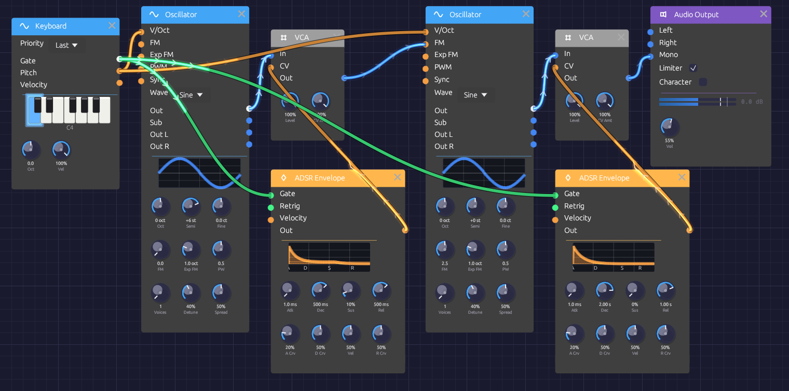
A modulator and a carrier, each with its own VCA and envelope.What it teaches
- Carrier and modulator. The carrier is the oscillator you hear. The modulator is an oscillator you don't hear directly: it wobbles the carrier's pitch so fast that the wobble becomes tone color.
- Ratio sets the character. Whole-number pitch ratios between the two sound harmonic. Other ratios sound like bells and metal.
- Index sets the brightness. The more the modulator moves the carrier, the more harmonics appear. An envelope on the index makes the tone evolve.
Modules
| Module | Settings |
|---|---|
| Keyboard | Defaults |
| Oscillator (modulator) | Wave Sine, Semi +6 |
| VCA (modulator) | Defaults |
| ADSR Envelope (modulator) | Atk 1 ms, Dec 500 ms, Sus 10%, Rel 500 ms |
| Oscillator (carrier) | Wave Sine, FM 2.5 |
| VCA (carrier) | Defaults |
| ADSR Envelope (carrier) | Atk 1 ms, Dec 2 s, Sus 0%, Rel 1 s |
| Audio Output | Vol 55% |
How it's built
Two oscillators, one keyboard
[Keyboard Pitch] ──> [Oscillator (modulator) V/Oct]
──> [Oscillator (carrier) V/Oct]
Both oscillators follow the keyboard, so the ratio between them stays the same on every note and the timbre stays the same up and down the keyboard. The modulator's Semi is +6, a tritone above the carrier. That's a frequency ratio of √2 : 1, about 1.41. No whole-number ratio is that close, so the harmonics it creates don't line up with the carrier's harmonic series. The result sounds like a bell, not a string.
The modulator, through a VCA
[Oscillator (modulator) Out] ──> [VCA (modulator) In]
[ADSR (modulator) Out] ──> [VCA (modulator) CV]
[VCA (modulator) Out] ──> [Oscillator (carrier) FM]
[Keyboard Gate] ──> [ADSR (modulator) Gate]
The carrier's FM input is through-zero linear FM: it multiplies the carrier's pitch by 1 + FM × input. With FM at 2.5 and the modulator at full level, the carrier's frequency swings well past zero and back on every cycle. That's what produces the glassy, crowded spectrum of a struck bell.
The FM knob has no CV input, so the patch controls the depth from the other side, by turning the modulator down. The modulator's VCA, driven by its envelope, does that: the modulation is at full depth for the strike, then decays over 500 ms to 10%. As it falls, the harmonics fall away, and the bell's clang mellows into a near-pure tone.
The carrier, through a VCA
[Oscillator (carrier) Out] ──> [VCA (carrier) In]
[ADSR (carrier) Out] ──> [VCA (carrier) CV]
[VCA (carrier) Out] ──> [Audio Output Mono]
[Keyboard Gate] ──> [ADSR (carrier) Gate]
The carrier's envelope is a bell's: an instant strike and a 2-second decay to silence, with a 1-second release if you let go early. Because the modulator's envelope is shorter, the tone gets purer as it gets quieter, the way real bells and struck metal behave.
Variations
Harmonic tones. Set the modulator's Semi to +12 (a 2:1 ratio) or +19 (3:1). The harmonics now line up with the note, giving organ-like and reedy tones in place of bells.
Electric piano. Set the modulator's Semi to 0 (1:1), lower the carrier's FM to about 1.5, and shorten the modulator envelope's Dec to 150 ms. The bright attack becomes a short "tine" over a mellow body.
Gong. Lengthen the carrier envelope's Dec to 8 s and the modulator's to 3 s. Try Oct −1 on the Keyboard.
Shimmer. Add a few cents of Fine to the modulator. The ratio drifts off true, and the spectrum slowly beats and turns.
Brighter or darker. Turn the carrier's FM up toward 5 for a harsher, more metallic strike, or down toward 1 for a gentler one.
Space. Bells want a room. Put a Reverb between the carrier VCA and the Audio Output.
Related
- Oscillator – how through-zero FM works
- Basic Subtractive Synth – the other way to shape harmonics
Lush Pad
A wide, slow-blooming pad for holding chords. Each note fades in over most of a second, a filter breathes open and closed over ten seconds, and chorus and reverb spread it across the stereo field. This is the polyphonic example: every note you hold gets its own oscillator, filter, envelope and VCA.
Load it: choose 📚 Examples → Lush Pad in the toolbar. Press ▶ Play, then hold chords on a MIDI keyboard or on the Z to M keys. The patch file is
patches/lush-pad.json.
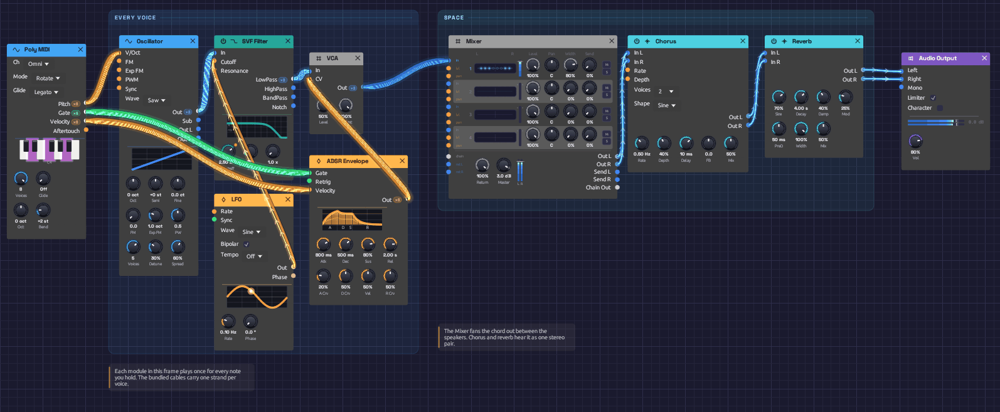
The bundled cables carry one strand per voice.What it teaches
- Polyphony. One chain of modules plays every note of a chord, each as its own voice. See Polyphony.
- Unison. Several detuned copies of one oscillator make a single note sound wide and alive.
- Mono and poly together. A mono LFO moves every voice at once, and the mono effects at the end hear all the voices summed.
Modules
| Module | Settings |
|---|---|
| Poly MIDI | Defaults: 8 voices, Rotate |
| Oscillator | Wave Saw, Voices 5, Detune 30%, Spread 60% |
| SVF Filter | Cutoff 2.5 kHz, Res 15% |
| LFO | Rate 0.1 Hz, Wave Sine, Bipolar on |
| ADSR Envelope | Atk 800 ms, Dec 500 ms, Sus 80%, Rel 2 s |
| VCA | Level 50% |
| Chorus | Rate 0.5 Hz, Depth 40%, Delay 10 ms, Voices 2, Mix 50% |
| Reverb | Size 70%, Decay 4 s, Damp 40%, PreD 50 ms, Mix 50% |
| Audio Output | Vol 80% |
How it's built
Voices from Poly MIDI
[Poly MIDI Pitch] ──> [Oscillator V/Oct]
[Poly MIDI Gate] ──> [ADSR Gate]
[Poly MIDI Velocity] ──> [ADSR Velocity]
Poly MIDI gives each held note a channel of its own, and these three cables carry all eight channels. The Oscillator and the ADSR are polyphonic, so they run one copy per channel: a four-note chord is four oscillators and four envelopes, each starting and releasing with its own key. Velocity reaches each note's envelope, so softer notes bloom quieter.
One note, five saws
The Oscillator stacks five saw waves per note with Voices 5, detuned 30% apart. They drift in and out of phase with each other, which gives each note its slow, chorused movement before any effect is added. Only the mono Out is used here; the stereo width comes later, from the chorus and reverb.
Five unison voices on each of eight notes is forty saws. If the patch strains your CPU, turn Poly MIDI's Voices down, or the Oscillator's.
A filter that breathes
[Oscillator Out] ──> [SVF Filter In]
[LFO Out] ──> [SVF Filter Cutoff]
The LFO takes ten seconds per cycle. The filter's Cutoff input works in octaves, so the bipolar LFO swings the cutoff an octave either side of 2.5 kHz, from 1.25 kHz to 5 kHz and back. The LFO is a mono cable into a polyphonic filter, so every voice's filter moves together, and the whole chord brightens and darkens as one.
The envelope and the VCA
[SVF Filter LowPass] ──> [VCA In]
[ADSR Out] ──> [VCA CV]
The 800 ms attack makes each note swell in rather than start, and the 2-second release lets chords overlap as you change them. Rotate allocation helps here: a released note keeps ringing on its own voice while the next chord takes fresh ones.
The VCA's Level sits at 50%. Voices add up, so a full chord is several times louder than one note, and the headroom keeps chords out of the limiter.
Effects, after the voices are summed
[VCA Out] ──> [Chorus In L]
[Chorus Out L] ──> [Reverb In L]
[Chorus Out R] ──> [Reverb In R]
[Reverb Out L] ──> [Audio Output Left]
[Reverb Out R] ──> [Audio Output Right]
The Chorus isn't polyphonic, so it hears the polyphonic cable summed into one signal. Its In R copies In L when nothing is patched there, and its two outputs come back with different modulation, which is where the stereo image starts. The Reverb's long, modulated tail does the rest.
Variations
Brighter or darker. Turn the filter's Cutoff up for a glassier pad or down to 800 Hz for a warm, distant one. The LFO keeps sweeping an octave either side of wherever you set it.
Supersaw. Set the Oscillator to Voices 7 and Detune 40%.
Strings. Shorten Atk to 300 ms and Rel to 1 s, and set the reverb's Decay to 2 s.
Swell. Lengthen Atk to 3 s. Hold a chord and let it rise.
Each voice its own. Replace the LFO's cable into the filter's Cutoff with Poly MIDI's Velocity. The filter is polyphonic, so each note's filter opens by up to an octave according to its own velocity, and harder notes come out brighter.
Cheaper. Set the Oscillator's Voices to 1 and add more chorus Depth. It's thinner, but costs a fifth of the CPU.
Related
- Polyphony – how polyphonic cables work
- Poly MIDI – voice allocation and the sustain pedal
- Oscillator – unison in detail
Generative Ambient
A patch that plays itself. A slow pentatonic melody repeats every twelve seconds, but each note comes out with a different brightness, the tuning drifts, and long echoes and an eight-second reverb blur one phrase into the next. Press Play and leave it running.
Load it: choose 📚 Examples → Generative Ambient in the toolbar and press ▶ Play. It needs no keyboard. The patch file is
patches/generative-ambient.json.
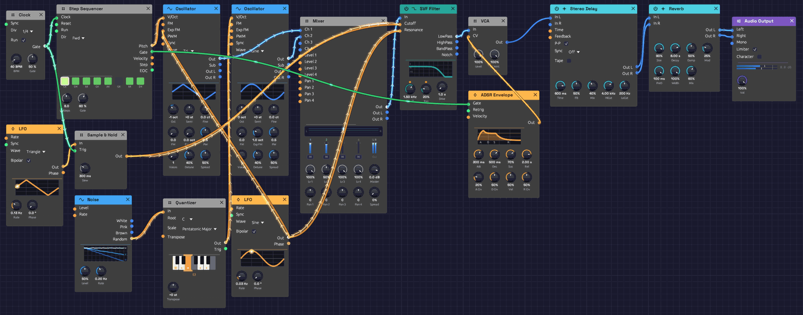
Clock and sequencer play the notes; two slow LFOs keep them from repeating.What it teaches
- Clock and sequencer. A clock sets the pace and a step sequencer turns each pulse into a note.
- Sample & hold. Freezing a moving signal at each note gives every note its own setting, a step at a time.
- Cycles that don't line up. When loops of different lengths run against each other, the combination takes a very long time to repeat. That's where the variety comes from, not from randomness.
Modules
| Module | Settings |
|---|---|
| Clock | BPM 40, Div 1/4 |
| Step Sequencer | Steps 8, Dir Fwd, Gate 60%. Notes C4 D4 E4 G4 A4 G4 E4 D4, step 6 off |
| Oscillator 1 | Wave Tri, Oct −1, Exp FM 0.01 oct |
| Oscillator 2 | Wave Sine |
| Mixer | Lv 1 100%, Lv 2 50% |
| SVF Filter | Cutoff 1.5 kHz, Res 20% |
| ADSR Envelope | Atk 300 ms, Dec 500 ms, Sus 70%, Rel 2 s |
| VCA | Defaults |
| LFO 1 | Rate 0.13 Hz, Wave Triangle, Bipolar on |
| Sample & Hold | Slew 300 ms |
| LFO 2 | Rate 0.03 Hz, Wave Sine, Bipolar on |
| Stereo Delay | Time 600 ms, FB 50%, Mix 40%, HiCut 4 kHz, LoCut 200 Hz, P-P on |
| Reverb | Size 90%, Decay 8 s, PreD 100 ms, Mix 60% |
| Audio Output | Vol 100% |
How it's built
The melody
[Clock Gate] ──> [Step Sequencer Clock]
[Step Sequencer Pitch] ──> [Oscillator 1 V/Oct]
──> [Oscillator 2 V/Oct]
[Step Sequencer Gate] ──> [ADSR Gate]
At 40 BPM with Div at 1/4, the Clock pulses once a beat, every 1.5 seconds. Each pulse moves the sequencer one step. Its eight steps rise and fall through a C major pentatonic scale, C D E G A G E D, and step 6's gate is off, so the melody takes a breath before it turns around. Eight steps of 1.5 seconds make a twelve-second loop.
The pentatonic scale has no half steps, so no two of its notes clash. That's why the long echoes and reverb can pile notes on top of each other without the result turning muddy.
Two oscillators, an octave apart
[Oscillator 1 Out] ──> [Mixer Ch 1]
[Oscillator 2 Out] ──> [Mixer Ch 2]
[Mixer Out] ──> [SVF Filter In]
Oscillator 1 is a triangle an octave down, and Oscillator 2 a sine at pitch, mixed in at half level. Together they make a soft, hollow tone, closer to a flute or a mallet than to a synth lead.
Brightness, one note at a time
[LFO 1 Out] ──> [Sample & Hold In]
[Clock Gate] ──> [Sample & Hold Trig]
[Sample & Hold Out] ──> [SVF Filter Cutoff]
LFO 1 is a slow triangle, one cycle every 7.7 seconds. On every clock pulse, the Sample & Hold catches the LFO's current value and holds it until the next. The filter's Cutoff input works in octaves, so each note gets a cutoff somewhere between 750 Hz and 3 kHz. The 300 ms Slew glides between values instead of jumping.
The LFO's 7.7-second cycle doesn't divide evenly into the 1.5-second pulses or the twelve-second loop. So the melody repeats exactly, but the brightness of each note doesn't: every pass through the phrase comes out shaded differently.
Slow drift
[LFO 2 Out] ──> [Oscillator 1 Exp FM]
──> [SVF Filter Resonance]
LFO 2 takes over half a minute per cycle. On Oscillator 1's Exp FM input, with Exp FM set to 0.01 octave, it bends the pitch about 12 cents sharp and flat. Against the steady Oscillator 2, that makes a slow beating, like an instrument that's not quite in tune with itself. The same LFO raises and lowers the filter's resonance, so some passages ring and others are soft.
Envelope, echoes and space
[SVF Filter LowPass] ──> [VCA In]
[ADSR Out] ──> [VCA CV]
[VCA Out] ──> [Stereo Delay In L]
[Stereo Delay Out L] ──> [Reverb In L]
[Stereo Delay Out R] ──> [Reverb In R]
[Reverb Out L] ──> [Audio Output Left]
[Reverb Out R] ──> [Audio Output Right]
The envelope's 300 ms attack takes the edge off each note and its 2-second release lets it ring into the next one. The Stereo Delay repeats every 600 ms with Ping-Pong on, so echoes bounce between the speakers. Its HiCut and LoCut darken and thin each repeat, so the echoes recede instead of building up. The Reverb's large room and 8-second tail turn it all into a wash.
Variations
Really generative. Set the sequencer's Dir to Rnd. The notes now come in a random order, and because they're all from the pentatonic scale, every order works.
Rewrite the melody. Click a step to turn its gate on or off. Right-click a step to move its pitch by a semitone or an octave. Stay on C, D, E, G and A to keep the pentatonic calm.
An odd-length loop. Set Steps to 5 or 7 so the phrase falls out of step with the bar.
Slower still. Turn the Clock down to 20 BPM, and raise the Reverb's Decay to 15 s or more.
Tape echoes. Turn on the delay's Tape for wobble and saturation in the repeats.
Wider drift. Raise Oscillator 1's Exp FM to 0.03 octave for a seasick, detuned-tape feel.
Related
- Sample & Hold – stepped modulation
- Step Sequencer – editing steps
- Rhythmic Sequence – the same clock and sequencer, at dance tempo
Rhythmic Sequence
A 16-step acid bassline at 120 BPM: a saw through a resonant lowpass that snaps open on every note, warmed with distortion and pushed along by a dotted-eighth echo. It plays itself, and it's built to be tweaked while it runs. Grab the filter's Cutoff and Res knobs and play them like a 303.
Load it: choose 📚 Examples → Rhythmic Sequence in the toolbar and press ▶ Play. It needs no keyboard. The patch file is
patches/rhythmic-sequence.json.
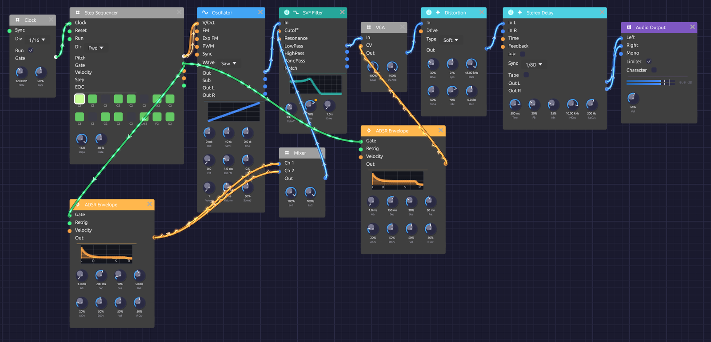
Two envelopes from the sequencer's gate: one squelches the filter, one shapes the volume.What it teaches
- Sequencing a bassline. Pitches, rests and an octave jump, all in one 16-step pattern.
- The filter envelope as the instrument. Short decay and high resonance are the sound of acid.
- Tempo sync. The delay locks to the Clock's tempo, so its echoes land on the beat.
Modules
| Module | Settings |
|---|---|
| Clock | BPM 120, Div 1/16 |
| Step Sequencer | Steps 16, Dir Fwd, Gate 50% |
| Oscillator | Wave Saw |
| SVF Filter | Cutoff 300 Hz, Res 70% |
| ADSR Envelope (filter) | Atk 1 ms, Dec 200 ms, Sus 10%, Rel 50 ms |
| Mixer | Lv 1 100%, Lv 2 100% |
| ADSR Envelope (amp) | Atk 1 ms, Dec 150 ms, Sus 30%, Rel 50 ms |
| VCA | Defaults |
| Distortion | Type Soft, Drive 30%, Mix 70% |
| Stereo Delay | Sync 1/8D, FB 30%, Mix 25%, HiCut 10 kHz, LoCut 300 Hz |
| Audio Output | Vol 55% |
How it's built
Clock and pattern
[Clock Gate] ──> [Step Sequencer Clock]
[Step Sequencer Pitch] ──> [Oscillator V/Oct]
At 120 BPM with Div at 1/16, the Clock pulses four times a beat, every 125 ms, and each pulse moves the sequencer one step. The sixteen steps make one bar:
| Step | 1 | 2 | 3 | 4 | 5 | 6 | 7 | 8 | 9 | 10 | 11 | 12 | 13 | 14 | 15 | 16 |
|---|---|---|---|---|---|---|---|---|---|---|---|---|---|---|---|---|
| Note | C2 | C2 | – | G2 | C2 | – | D#2 | C2 | C3 | – | G2 | C2 | – | D#2 | F2 | G2 |
A dash is a step with its gate off: a rest. The line sits on the root, C2, and moves through notes of C minor (D# is the minor third) with an octave leap on the downbeat of the second half. The rests do as much as the notes: they're what make it groove rather than drone.
The squelch
[Oscillator Out] ──> [SVF Filter In]
[Step Sequencer Gate] ──> [ADSR (filter) Gate]
[ADSR (filter) Out] ──> [Mixer Ch 1]
──> [Mixer Ch 2]
[Mixer Out] ──> [SVF Filter Cutoff]
The filter sits low, at 300 Hz, with Res at 70%. The filter envelope kicks it open on every step with a gate, then drops it back in 200 ms. That fast sweep of a sharp resonant peak is the acid sound.
The filter's Cutoff input works in octaves, and an envelope peaks at 1.0, so one envelope on its own opens the filter by one octave. The patch sends the envelope into both inputs of a Mixer to add two copies together, which opens it further. The Mixer softly limits anything over 1.0, so in practice the peak is about an octave and a third, up to roughly 750 Hz.
Volume, drive and echo
[Step Sequencer Gate] ──> [ADSR (amp) Gate]
[SVF Filter LowPass] ──> [VCA In]
[ADSR (amp) Out] ──> [VCA CV]
[VCA Out] ──> [Distortion In]
[Distortion Out] ──> [Stereo Delay In L]
[Stereo Delay Out L] ──> [Audio Output Left]
[Stereo Delay Out R] ──> [Audio Output Right]
The amp envelope is short and punchy, so each note is a distinct pluck. With Gate at 50%, each of the sequencer's gates lasts 50 ms (gate length is a share of a fixed 100 ms), well inside the 125 ms step.
Soft distortion at 30% drive, mixed at 70%, rounds and thickens the bass and makes the resonant peak growl.
The Stereo Delay's Sync is set to 1/8D, a dotted eighth. It takes its tempo from the Clock, so at 120 BPM each echo comes 375 ms after its note: three sixteenths later, falling between the notes and filling the gaps. Its LoCut keeps the echoes out of the bass register, so they don't muddy the line.
Variations
Play the filter. While it runs, sweep Cutoff between 150 Hz and 1 kHz and push Res toward 90%. Lengthen the filter envelope's Dec to 400 ms for longer squelches.
Change the line. Click a step to toggle its gate. Right-click a step to move its pitch by a semitone or an octave.
Different tempo. Turn the Clock's BPM. The delay follows, staying on the dotted eighth.
Shorter loop. Set Steps to 12 or 7 for a pattern that cycles against the bar.
Fatter. Swap the SVF for a Ladder Filter and use its LP24 output. Raise its Drive to 3x.
Harder. Set the Distortion's Type to Hard or Fold and raise Drive. Turn Out down to keep the level in check.
Related
- Clock – tempo and divisions
- Step Sequencer – editing steps
- Generative Ambient – the same clock and sequencer, slowed right down
Afterglow
A patch that plays itself and sounds finished: a soft, plucked arpeggio rolls through a four-chord progression over a warm pad. Its notes bounce between the speakers on dotted-eighth tape echoes. Nothing in the rack plays chords, so two sequencers share the work. One plays the arpeggio, and the other moves it from chord to chord.
Load it: choose 📚 Examples → Afterglow in the toolbar and press ▶ Play. It needs no keyboard. The patch file is
patches/afterglow.json.
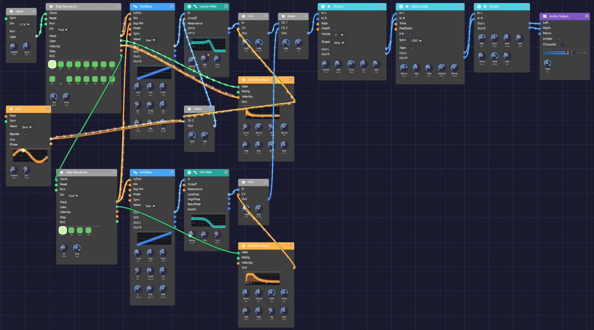
The arpeggio voice and the effects run along the top, and the pad runs along the bottom. The cable between the two sequencers is what changes the chords.What it teaches
- Transposing with a second sequencer. Pitch inputs add up, so one sequencer can shift another's notes. Here it plays the arpeggio over four chords.
- Clocking from end of cycle. A sequencer's EOC output can clock a second sequencer, so the second one moves once per bar.
- Chords without a third. Sus2 shapes are neither major nor minor, so the same shape works on any root.
- Two voices, one space. A bright lead and a dark pad share one chorus, delay and reverb, so they sound as if they're in the same room.
Modules
| Module | Settings |
|---|---|
| Clock | BPM 92, Div 1/16 |
| Step Sequencer 1 (arpeggio) | Steps 16, Gate 60%. Notes C4 G4 D5 C5 G5 D5 G4 C5 C4 G4 D5 G5 C6 G5 D5 G4, step 10 off |
| Step Sequencer 2 (chords) | Steps 4, Gate 99%. Notes F3 C4 G3 A3 |
| Oscillator 1 | Wave Saw, Voices 2, Detune 12%, Exp FM 1.0 oct |
| Ladder Filter | Cutoff 900 Hz, Res 35%, Drive 2.2x |
| ADSR Envelope 1 | Atk 2 ms, Dec 350 ms, Sus 0%, Rel 350 ms, Vel 60% |
| LFO | Rate 0.04 Hz, Wave Sine, Bipolar on |
| Mixer 1 (filter sweep) | Lv 1 100%, Lv 2 70% |
| VCA 1 | Defaults |
| Oscillator 2 | Wave Saw, Oct −1, Voices 5, Detune 25%, Spread 60% |
| SVF Filter | Cutoff 420 Hz, Res 15% |
| ADSR Envelope 2 | Atk 80 ms, Dec 100 ms, Sus 100%, Rel 2.2 s, Vel 0% |
| VCA 2 | Level 75%, CV Amt 60% |
| Mixer 2 | Lv 1 100%, Lv 2 65% |
| Chorus | Rate 0.3 Hz, Depth 35%, Delay 12 ms, Voices 2, Mix 35% |
| Stereo Delay | Sync 1/8D, FB 45%, Mix 30%, HiCut 3.5 kHz, LoCut 350 Hz, P-P on, Tape on |
| Reverb | Size 80%, Decay 5 s, PreD 30 ms, Mix 35%, Mod 30% |
| Audio Output | Vol 100% |
How it's built
One shape, four chords
[Clock Gate] ──> [Step Sequencer 1 Clock]
[Step Sequencer 1 Pitch] ──> [Oscillator 1 V/Oct]
[Step Sequencer 1 EOC] ──> [Step Sequencer 2 Clock]
[Step Sequencer 2 Pitch] ──> [Oscillator 1 Exp FM]
Sequencer 1 plays a sixteen-step arpeggio at one note per sixteenth. It uses four notes: C, G, D and the octave C, which are a chord's root, fifth, ninth and octave. They're spread over two octaves.
Sequencer 2 holds the chord. It's clocked by Sequencer 1's EOC output, which pulses each time the arpeggio wraps around, so it steps once per bar: F, C, G, A. Its Pitch goes into Oscillator 1's Exp FM input, and with Exp FM at 1.0 octave per volt that input works exactly like a second V/Oct. The oscillator adds the two pitches together. C4 is zero volts, so a step on F3 moves the whole arpeggio down seven semitones, and C4 leaves it where it is.
The shape has no third. Without one, a chord is neither major nor minor (it's a sus2). So moving the shape doesn't change its mood, and on these four roots every note it plays stays on the white keys, in C major. Played as full chords, the progression would be F, C, G and A minor. As sus2 shapes it sounds open and unresolved.
The pluck
[Oscillator 1 Out] ──> [Ladder Filter In]
[Ladder Filter LP24] ──> [VCA 1 In]
[Step Sequencer 1 Gate] ──> [ADSR 1 Gate]
[Step Sequencer 1 Velocity] ──> [ADSR 1 Velocity]
[ADSR 1 Out] ──> [VCA 1 CV]
──> [Mixer 1 Ch 1]
[LFO Out] ──> [Mixer 1 Ch 2]
[Mixer 1 Out] ──> [Ladder Filter Cutoff]
Two slightly detuned saws go through the ladder filter's 24 dB lowpass. A fast envelope opens both the VCA and the filter, so each note starts bright and dulls as it fades, like a plucked string. Each step has its own velocity. The loud ones fall on steps 1, 4, 7, 11 and 14, a 3-3-4-3-3 pattern that pushes against the even sixteenths, so the line grooves instead of ticking.
The Mixer adds a very slow LFO to the envelope before both reach Cutoff. Over 25 seconds the whole arpeggio gets darker and then brighter again. One cycle of the LFO lasts nearly ten bars, so each pass through the progression sounds a little different.
The pad
[Step Sequencer 2 Pitch] ──> [Oscillator 2 V/Oct]
[Oscillator 2 Out] ──> [SVF Filter In]
[SVF Filter LowPass] ──> [VCA 2 In]
[Step Sequencer 2 Gate] ──> [ADSR 2 Gate]
[ADSR 2 Out] ──> [VCA 2 CV]
The chord sequencer also plays the bass. Oscillator 2 is five detuned saws an octave down, and they follow the chord roots. The SVF filter at 420 Hz keeps them dark and round.
VCA 2's CV Amt of 60% means the envelope controls only part of the level, and the other 40% is always there. So the pad never stops. On each chord change, the sequencer's short gate fires ADSR 2, and the pad swells, then settles back over two seconds. The very first bar plays over F before Sequencer 2 has had a clock, so the pad comes in quietly and blooms on the first change.
Echoes and space
[VCA 1 Out] ──> [Mixer 2 Ch 1]
[VCA 2 Out] ──> [Mixer 2 Ch 2]
[Mixer 2 Out] ──> [Chorus In L]
[Chorus Out L/R] ──> [Stereo Delay In L/R]
[Stereo Delay Out L/R] ──> [Reverb In L/R]
[Reverb Out L/R] ──> [Audio Output Left/Right]
The Chorus turns the mono mix into stereo. The Stereo Delay is synced to a dotted eighth, which is three sixteenths. Each echo therefore falls between the notes of the arpeggio, and Ping-Pong moves it to the other speaker. The arpeggio sounds busier than it is, the echoes stay in time with it, and the rhythm keeps moving. Tape gives the repeats a little wobble and wear. LoCut keeps the bass out of the echoes, so the low end stays clean. A medium reverb with a five-second tail puts everything in the same room.
Variations
A new progression. Right-click Sequencer 2's steps to change the roots. C, D, F, G and A keep every note in C major. E and B add an F♯ or a C♯, which can sound lovely, but the pad and the arpeggio won't share a key.
A longer progression. Set Sequencer 2's Steps to 8 and fill in four more roots, for example F C G A F C D G.
A different arpeggio. Set Sequencer 1's Dir to P-P to rock back and forth, or Rnd for a new order every bar. Any order of the four notes still fits the chord.
Triplet shimmer. Set the delay's Sync to 1/8T. The echoes now land in threes against the sixteenths.
Glassier. Switch Oscillator 1's Wave to Tri and raise the Ladder Filter's Cutoff to 2 kHz. The pluck goes from felt to glass.
Slower and wider. Turn the Clock down to 70 BPM. The delay follows the new tempo. Then raise the Reverb's Decay to 9 s and its Mix to 50%.
Related
- Step Sequencer – editing steps and the EOC output
- Oscillator – V/Oct and Exp FM
- Generative Ambient – one sequencer and a single line, left to drift
- Rhythmic Sequence – the same dotted-eighth delay under an acid bassline